SpringCloud

依赖管理
<?xml version="1.0" encoding="UTF-8"?> <project xmlns="http://maven.apache.org/POM/4.0.0" xmlns:xsi="http://www.w3.org/2001/XMLSchema-instance" xsi:schemaLocation="http://maven.apache.org/POM/4.0.0 http://maven.apache.org/xsd/maven-4.0.0.xsd"> <modelVersion>4.0.0</modelVersion> <groupId>org.example</groupId> <artifactId>spring-cloud-demo</artifactId> <version>1.0-SNAPSHOT</version> <packaging>pom</packaging> <modules> <module>cloud-eureka-server7001</module> <module>cloud-eureka-server-7002</module> <module>cloud-provider-payment8001</module> <module>cloud-provider-payment8002</module> <module>cloud-api-common</module> <module>cloud-consumer-order80</module> </modules> <properties> <maven.compiler.source>8</maven.compiler.source> <maven.compiler.target>8</maven.compiler.target> </properties> <dependencyManagement> <dependencies> <dependency> <groupId>org.springframework.boot</groupId> <artifactId>spring-boot-dependencies</artifactId> <version>2.2.2.RELEASE</version> <type>pom</type> <scope>import</scope> </dependency> <dependency> <groupId>org.springframework.cloud</groupId> <artifactId>spring-cloud-dependencies</artifactId> <version>Hoxton.SR1</version> <type>pom</type> <scope>import</scope> </dependency> <!--spring cloud alibaba 2.1.0.RELEASE--> <dependency> <groupId>com.alibaba.cloud</groupId> <artifactId>spring-cloud-alibaba-dependencies</artifactId> <version>2.1.0.RELEASE</version> <type>pom</type> <scope>import</scope> </dependency> </dependencies> </dependencyManagement> <build> <plugins> <plugin> <groupId>org.springframework.boot</groupId> <artifactId>spring-boot-maven-plugin</artifactId> <configuration> <fork>true</fork> <addResources>true</addResources> </configuration> </plugin> </plugins> </build> </project>
Eureka服务注册中心依赖
<dependencies> <dependency> <groupId>org.springframework.boot</groupId> <artifactId>spring-boot-starter-web</artifactId> </dependency> <dependency> <groupId>org.springframework.boot</groupId> <artifactId>spring-boot-test</artifactId> <scope>test</scope> </dependency> <dependency> <groupId>org.springframework.boot</groupId> <artifactId>spring-boot-starter-actuator</artifactId> </dependency> <dependency> <groupId>org.springframework.cloud</groupId> <artifactId>spring-cloud-starter-netflix-eureka-server</artifactId> </dependency> </dependencies>
Eureka客户服务依赖
<dependencies> <dependency> <groupId>org.springframework.cloud</groupId> <artifactId>spring-cloud-starter-netflix-eureka-client</artifactId> </dependency> <dependency> <groupId>org.springframework.boot</groupId> <artifactId>spring-boot-starter-web</artifactId> </dependency> <dependency> <groupId>org.springframework.boot</groupId> <artifactId>spring-boot-starter-actuator</artifactId> </dependency> <dependency> <groupId>org.example</groupId> <artifactId>cloud-api-common</artifactId> <version>${project.version}</version> </dependency> </dependencies>
1、RestTemplate 服务调用
注册bean组件
@Configuration public class RestTemplateConfig { @Bean //@LoadBalanced //要使用Eureka的服务功能必须加上注解@LoadBelanced(服务轮询), 否则要调用具体的服务实例 public RestTemplate restTemplate(RestTemplateBuilder restTemplateBuilder){ return restTemplateBuilder.rootUri("localhost:8001").build(); } }
使用RestTemplate(服务消费者)
package com.qibria.controller; import com.cloud.vo.CommonResult; import com.cloud.vo.Payment; import org.springframework.beans.factory.annotation.Value; import org.springframework.web.bind.annotation.GetMapping; import org.springframework.web.bind.annotation.RestController; import org.springframework.web.client.RestTemplate; @RestController public class HelloController { private final RestTemplate restTemplate; @Value("${server.port}") private String port; public HelloController(RestTemplate template) { this.restTemplate = template; } @GetMapping("hello") public CommonResult hello(){ return restTemplate.getForObject("hello", CommonResult.class); } @GetMapping("hello/get") public CommonResult<Payment> helloGet(Payment payment){ return restTemplate.getForObject("/hello/get?id={id}&serial={serial}", CommonResult.class, 10, "hello get"); } @GetMapping("hello/post") public CommonResult<Payment> helloPost(Payment payment){ return restTemplate.postForObject("/hello/post", payment, CommonResult.class); } }
服务提供者
@RestController public class HelloController { @Value("${server.port}") private String port; @GetMapping("hello") public CommonResult hello(){ return new CommonResult<>(200, "hello: " + port); } @GetMapping("hello/get") public CommonResult<Payment> helloGet(Payment payment){ return new CommonResult<>(200, "hello get: " + port, payment); } @PostMapping("hello/post") public CommonResult<Payment> helloPost(@RequestBody Payment payment){ return new CommonResult<>(200, "hello post: " + port, payment); } }
2、Eureka服务注册中心使用
单注册中心实例
注册中心(单个注册中心实例)
@EnableEurekaServer //代表此服务是注册中心 @SpringBootApplication public class EurekaServer7001 { public static void main(String[] args) { SpringApplication.run(EurekaServer7001.class,args); } }
server: port: 7001 eureka: instance: hostname: localhost #eureka服务端的实例名称 client: register-with-eureka: false #false表示不向注册中心注册自己。 fetch-registry: false #false表示自己端就是注册中心，我的职责就是维护服务实例，并不需要去检索服务 service-url: #集群指向其它eureka #defaultZone: http://127.0.0.1:7002/eureka/ #单机就是7001自己 defaultZone: http://${eureka.instance.hostname}:7001/eureka/ #server: #关闭自我保护机制，保证不可用服务被及时踢除 #enable-self-preservation: false #eviction-interval-timer-in-ms: 2000
注册应用实例(可以有多个相同实例，注意实例名不要相同)
@SpringBootApplication @EnableEurekaClient //代表注册客户服务实例 public class PaymentMain8001 { public static void main(String[] args) { SpringApplication.run(PaymentMain8001.class, args); } }
server: port: 8001 spring: application: name: cloud-payment-service eureka: client: #表示是否将自己注册进EurekaServer默认为true。 register-with-eureka: true #是否从EurekaServer抓取已有的注册信息，默认为true。单节点无所谓，集群必须设置为true才能配合ribbon使用负载均衡 fetchRegistry: true service-url: #单机版 defaultZone: http://127.0.0.1:7001/eureka # 集群版 #defaultZone: http://eureka7001.com:7001/eureka,http://eureka7002.com:7002/eureka instance: instance-id: payment8001 #访问路径可以显示IP地址 prefer-ip-address: true #Eureka客户端向服务端发送心跳的时间间隔，单位为秒(默认是30秒) #lease-renewal-interval-in-seconds: 1 #Eureka服务端在收到最后一次心跳后等待时间上限，单位为秒(默认是90秒)，超时将剔除服务 #lease-expiration-duration-in-seconds: 2
多注册中心实例
@EnableEurekaServer //代表此服务是注册中心 @SpringBootApplication public class EurekaServer7001 { public static void main(String[] args) { SpringApplication.run(EurekaServer7001.class,args); } }
server: port: 7001 eureka: instance: hostname: eureka7001.com #eureka服务端的实例名称 client: register-with-eureka: false #false表示不向注册中心注册自己。 fetch-registry: false #false表示自己端就是注册中心，我的职责就是维护服务实例，并不需要去检索服务 service-url: #集群指向其它eureka defaultZone: http://eureka7002.com:7002/eureka/ #单机就是7001自己 #defaultZone: http://${eureka.instance.hostname}:7001/eureka/ #server: #关闭自我保护机制，保证不可用服务被及时踢除 #enable-self-preservation: false #eviction-interval-timer-in-ms: 2000
@EnableEurekaServer //代表此服务是注册中心 @SpringBootApplication public class EurekaServer7002 { public static void main(String[] args) { SpringApplication.run(EurekaServer7001.class,args); } }
server: port: 7002 eureka: instance: hostname: eureka7002.com #eureka服务端的实例名称 client: register-with-eureka: false #false表示不向注册中心注册自己。 fetch-registry: false #false表示自己端就是注册中心，我的职责就是维护服务实例，并不需要去检索服务 service-url: #集群指向其它eureka defaultZone: http://eureka7001.com:7001/eureka/ #单机就是7001自己 #defaultZone: http://${eureka.instance.hostname}:7001/eureka/ #server: #关闭自我保护机制，保证不可用服务被及时踢除 #enable-self-preservation: false #eviction-interval-timer-in-ms: 2000
注册服务实例(每个实例都都注册进注册中心)
@SpringBootApplication @EnableEurekaClient //代表注册客户服务实例 public class PaymentMain8001 { public static void main(String[] args) { SpringApplication.run(PaymentMain8001.class, args); } }
server: port: 8001 spring: application: name: cloud-payment-service eureka: client: #表示是否将自己注册进EurekaServer默认为true。 register-with-eureka: true #是否从EurekaServer抓取已有的注册信息，默认为true。单节点无所谓，集群必须设置为true才能配合ribbon使用负载均衡 fetchRegistry: true service-url: #单机版 #defaultZone: http://127.0.0.1:7001/eureka # 集群版 #defaultZone: http://127.0.0.1:7001/eureka,http://127.0.0.1:7002/eureka defaultZone: http://eureka7001.com:7001/eureka,http://eureka7002.com:7002/eureka instance: instance-id: payment8001 #访问路径可以显示IP地址 prefer-ip-address: true #Eureka客户端向服务端发送心跳的时间间隔，单位为秒(默认是30秒) #lease-renewal-interval-in-seconds: 1 #Eureka服务端在收到最后一次心跳后等待时间上限，单位为秒(默认是90秒)，超时将剔除服务 #lease-expiration-duration-in-seconds: 2
服务消费者
@EnableEurekaClient @SpringBootApplication public class OrderMain80 { public static void main(String[] args) { SpringApplication.run(OrderMain80.class,args); } }
server: port: 80 spring: application: name: cloud-order-sevice # zipkin: # base-url: http://localhost:9411 # sleuth: # sampler: # probability: 1 eureka: client: #表示是否将自己注册进EurekaServer默认为true。 register-with-eureka: true #是否从EurekaServer抓取已有的注册信息，默认为true。单节点无所谓，集群必须设置为true才能配合ribbon使用负载均衡 fetchRegistry: true service-url: #单机 #defaultZone: http://localhost:7001/eureka # 集群 #defaultZone: http://127.0.0.1:7001/eureka,http://127.0.0.1:7002/eureka # 集群版 defaultZone: http://eureka7001.com:7001/eureka,http://eureka7002.com:7002/eureka
RestTemplate配置（重要）
@Configuration public class RestTemplateConfig { @Bean @LoadBalanced // 必须使用此注解否则服务中兴无法找到服务实例 public RestTemplate restTemplate(RestTemplateBuilder restTemplateBuilder){ return restTemplateBuilder.rootUri("http://CLOUD-PAYMENT-SERVICE").build(); //CLOUD-PAYMENT-SERVICE服务实例名, 使用注册中心后不需要访问具体的主机名, 直接使用注册服务是定义的应用名即可 } }
RestTemplate使用(结合服务注册实例)
@RestController public class HelloController { private final RestTemplate restTemplate; @Value("${server.port}") private String port; public HelloController(RestTemplate template) { this.restTemplate = template; } @GetMapping("hello") public CommonResult hello(){ return restTemplate.getForObject("hello", CommonResult.class); } @GetMapping("hello/get") public CommonResult<Payment> helloGet(Payment payment){ return restTemplate.getForObject("/hello/get?id={id}&serial={serial}", CommonResult.class, 10, "hello get"); } @GetMapping("hello/post") public CommonResult<Payment> helloPost(Payment payment){ return restTemplate.postForObject("/hello/post", payment, CommonResult.class); } }

Discovery服务发现
客户服务主动获取注册中心的信息
主启动类使用注解 @EnableDiscoveryClient
@EnableEurekaClient //客户服务注册 @EnableDiscoveryClient //服务发现 @SpringBootApplication public class PaymentMain8001 { public static void main(String[] args) { SpringApplication.run(PaymentMain8001.class, args); } }
@RestController public class HelloController { @GetMapping(value = "/payment/discovery") public Object discovery() { List<String> services = discoveryClient.getServices(); for (String element : services) { log.info("*****element: "+element); } List<ServiceInstance> instances = discoveryClient.getInstances("CLOUD-PAYMENT-SERVICE"); for (ServiceInstance instance : instances) { log.info(instance.getServiceId()+"\t"+ instance.getHost()+"\t"+instance.getPort()+"\t"+instance.getUri()); } return this.discoveryClient; } }
Eureka自我保护
客户服务不可用时, Eureka不会立刻清理此服务实例, 根据其保护机制注册中心依然保存此实例，如果在阈值时间内无法收到服务心跳, 注册中心才会将服务实例从注册中心移除, 以此防止注册中心误删因为网络波动而无法发送心跳的服务器
怎么禁止自我保护
server: port: 7001 eureka: instance: hostname: localhost #eureka服务端的实例名称 instance-id: eureka7001 client: register-with-eureka: false #false表示不向注册中心注册自己。 fetch-registry: false #false表示自己端就是注册中心，我的职责就是维护服务实例，并不需要去检索服务 service-url: #集群指向其它eureka defaultZone: http://127.0.0.1:7002/eureka/ #单机就是7001自己 #defaultZone: http://eureka7001.com:7001/eureka/ server: enable-self-preservation: false # 关闭自我保护机制，保证不可用服务被及时踢除 eviction-interval-timer-in-ms: 2000
server: port: 8001 spring: application: name: cloud-payment-service eureka: client: #表示是否将自己注册进EurekaServer默认为true。 register-with-eureka: true #是否从EurekaServer抓取已有的注册信息，默认为true。单节点无所谓，集群必须设置为true才能配合ribbon使用负载均衡 fetchRegistry: true service-url: #单机版 #defaultZone: http://127.0.0.1:7001/eureka # 集群版 defaultZone: http://127.0.0.1:7001/eureka,http://127.0.0.1:7002/eureka #defaultZone: http://eureka7001.com:7001/eureka,http://eureka7002.com:7002/eureka instance: instance-id: payment8001 #访问路径可以显示IP地址 prefer-ip-address: true #Eureka客户端向服务端发送心跳的时间间隔，单位为秒(默认是30秒) lease-renewal-interval-in-seconds: 1 #Eureka服务端在收到最后一次心跳后等待时间上限，单位为秒(默认是90秒)，超时将剔除服务 lease-expiration-duration-in-seconds: 2
3、Zookeeper注册中心
<dependencies> <dependency> <groupId>org.springframework.boot</groupId> <artifactId>spring-boot-starter-web</artifactId> </dependency> <!-- SpringBoot整合zookeeper客户端 --> <dependency> <groupId>org.springframework.cloud</groupId> <artifactId>spring-cloud-starter-zookeeper-discovery</artifactId> </dependency> </dependencies>
@SpringBootApplication @EnableDiscoveryClient public class ZkOrderMain80{ public static void main(String[] args) { SpringApplication.run(ZkOrderMain80.class, args); } }
server: port: 80 #服务别名----注册zookeeper到注册中心名称 spring: application: name: cloud-consumer-order cloud: zookeeper: connect-string: 192.168.1.7:2181
@Configuration public class RestTemplateConfig { @Bean @LoadBalanced public RestTemplate restTemplate(RestTemplateBuilder restTemplateBuilder){ return restTemplateBuilder.rootUri("http://cloud-provider-payment").build(); } }
@RestController public class HelloController { @Value("${server.port}") private String serverPort; @Resource private RestTemplate restTemplate; @RequestMapping(value = "/payment/zk") public String paymentZk() { return restTemplate.getForObject("/payment/zk",String.class); } }
@SpringBootApplication @EnableDiscoveryClient public class PaymentMain8004 { public static void main(String[] args) { SpringApplication.run(PaymentMain8004.class, args); } }
server: port: 8004 #服务别名----注册zookeeper到注册中心名称 spring: application: name: cloud-provider-payment cloud: zookeeper: connect-string: 192.168.1.7:2181
@RestController public class HelloController { @Value("${server.port}") private String serverPort; @RequestMapping(value = "/payment/zk") public String paymentZk() { return "springCloud with zookeeper: "+serverPort+"\t"+ UUID.randomUUID().toString(); } }
4、consul
启动命令
./consul agent -dev -ui -node=consul-dev -client=0.0.0.0
<dependencies> <dependency> <groupId>org.springframework.cloud</groupId> <artifactId>spring-cloud-starter-consul-discovery</artifactId> </dependency> <!-- SpringBoot整合Web组件 --> <dependency> <groupId>org.springframework.boot</groupId> <artifactId>spring-boot-starter-web</artifactId> </dependency> <dependency> <groupId>org.springframework.boot</groupId> <artifactId>spring-boot-starter-actuator</artifactId> </dependency> </dependencies>
@SpringBootApplication @EnableDiscoveryClient public class ConsulOrder80Main { public static void main(String[] args) { SpringApplication.run(ConsulOrder80Main.class, args); } }
server: port: 80 spring: application: name: cloud-consumer-order ####consul注册中心地址 cloud: consul: host: 192.168.1.7 port: 8500 discovery: hostname: 127.0.0.1 service-name: ${spring.application.name} heartbeat: enabled: true
@Configuration public class RestTemplateConfig { @Bean @LoadBalanced public RestTemplate restTemplate(RestTemplateBuilder restTemplateBuilder){ return restTemplateBuilder.rootUri("http://consul-provider-payment").build(); } }
@RestController public class HelloController { @Resource private RestTemplate restTemplate; @RequestMapping(value = "/payment/consul") public String paymentZk() { return restTemplate.getForObject("/payment/consul",String.class); } }
@SpringBootApplication @EnableDiscoveryClient public class PaymentMain8006 { public static void main(String[] args) { SpringApplication.run(PaymentMain8006.class, args); } }
server: port: 8006 spring: application: name: consul-provider-payment ####consul注册中心地址 cloud: consul: host: 192.168.1.7 port: 8500 discovery: hostname: 127.0.0.1 service-name: ${spring.application.name} heartbeat: enabled: true
@RestController public class HelloController { @Value("${server.port}") private String port; @RequestMapping(value = "payment/consul") public String paymentConsul() { return "hello consul---" + port +"---"+ UUID.randomUUID(); } }
5、Riboon负载均衡
Eurake默认使用Riboon对RestTemplate做了负载均衡(轮询规则)
自定义负载均衡规则
注意: 此包不能和主启动类在同一个包路径下
@Configuration public class MySelfRule { @Bean public IRule myRule() { return new RandomRule();//定义为随机 } }
主启功类
@EnableEurekaClient @SpringBootApplication @RibbonClient(name = "CLOUD-PAYMENT-SERVICE",configuration= MySelfRule.class) public class OrderMain80 { public static void main(String[] args) { SpringApplication.run(OrderMain80.class,args); } }
RestTemplate实例
@Configuration public class RestTemplateConfig { @Bean @LoadBalanced public RestTemplate restTemplate(RestTemplateBuilder restTemplateBuilder){ return restTemplateBuilder.rootUri("http://CLOUD-PAYMENT-SERVICE").build(); } }
自定义实现负载均衡（轮询）
使用cps和回旋锁实现
顶层接口-只有一个方法(获取服务实例)
public interface LoadBalancer{ ServiceInstance instances(List<ServiceInstance> serviceInstances); }
实现类
@Component public class MyLB implements LoadBalancer{ private AtomicInteger atomicInteger = new AtomicInteger(0); public final int getAndIncrement(){ int current; int next; do { current = this.atomicInteger.get(); next = current >= 2147483647 ? 0 : current + 1; }while(!this.atomicInteger.compareAndSet(current,next)); System.out.println("*****第几次访问，次数next: "+next); return next; } //负载均衡算法：rest接口第几次请求数 % 服务器集群总数量 = 实际调用服务器位置下标 ，每次服务重启动后rest接口计数从1开始。 @Override public ServiceInstance instances(List<ServiceInstance> serviceInstances){ int index = getAndIncrement() % serviceInstances.size(); return serviceInstances.get(index); } }
@Configuration public class RestTemplateConfig { @Bean //@LoadBalanced public RestTemplate restTemplate(RestTemplateBuilder restTemplateBuilder){ return restTemplateBuilder.build(); } }
Controller
@RestController @Slf4j public class OrderController{ //public static final String PAYMENT_URL = "http://localhost:8001"; public static final String PAYMENT_URL = "http://CLOUD-PAYMENT-SERVICE"; @Resource private RestTemplate restTemplate; @Resource private LoadBalancer loadBalancer; @Resource private DiscoveryClient discoveryClient; @GetMapping(value = "/consumer/payment/lb") public String getPaymentLB() { List<ServiceInstance> instances = discoveryClient.getInstances("CLOUD-PAYMENT-SERVICE"); if(instances == null || instances.size() <= 0) { return null; } ServiceInstance serviceInstance = loadBalancer.instances(instances); URI uri = serviceInstance.getUri(); return restTemplate.getForObject(uri+"/payment/lb",String.class); } }
6、Openfeign服务调用(面向消费者)
依赖
<dependencies> <dependency> <groupId>org.springframework.cloud</groupId> <artifactId>spring-cloud-starter-openfeign</artifactId> </dependency> <!--eureka client--> <dependency> <groupId>org.springframework.cloud</groupId> <artifactId>spring-cloud-starter-netflix-eureka-client</artifactId> </dependency> <!-- 引入自己定义的api通用包，可以使用Payment支付Entity --> <dependency> <groupId>org.example</groupId> <artifactId>cloud-api-common</artifactId> <version>1.0-SNAPSHOT</version> </dependency> <!--web--> <dependency> <groupId>org.springframework.boot</groupId> <artifactId>spring-boot-starter-web</artifactId> </dependency> <dependency> <groupId>org.springframework.boot</groupId> <artifactId>spring-boot-starter-actuator</artifactId> </dependency> </dependencies>
@SpringBootApplication @EnableFeignClients public class OrderFeignMain80 { public static void main(String[] args) { SpringApplication.run(OrderFeignMain80.class, args); } }
server: port: 80 spring: application: name: cloud-order-sevice eureka: client: #表示是否将自己注册进EurekaServer默认为true。 register-with-eureka: true #是否从EurekaServer抓取已有的注册信息，默认为true。单节点无所谓，集群必须设置为true才能配合ribbon使用负载均衡 fetchRegistry: true service-url: #单机 #defaultZone: http://localhost:7001/eureka # 集群 defaultZone: http://127.0.0.1:7001/eureka,http://127.0.0.1:7002/eureka # 集群版 #设置feign客户端超时时间(OpenFeign默认支持ribbon) ribbon: #指的是建立连接所用的时间，适用于网络状况正常的情况下,两端连接所用的时间 ReadTimeout: 5000 #指的是建立连接后从服务器读取到可用资源所用的时间 ConnectTimeout: 5000
@Service @FeignClient(value = "CLOUD-PAYMENT-SERVICE") public interface PaymentFeignService { @GetMapping(value = "/hello") CommonResult<Payment> hello(); @GetMapping(value = "/payment/feign/timeout") String paymentFeignTimeout(); }
@RestController public class HelloController { @Resource private PaymentFeignService paymentFeignService; @Value("${server.port}") private String port; @GetMapping("hello") public CommonResult<Payment> hello(){ return paymentFeignService.hello(); } }
开启日志
@Configuration public class FeignConfig { @Bean Logger.Level feignLoggerLevel() { return Logger.Level.FULL; } }
server: port: 80 spring: application: name: cloud-order-sevice # zipkin: # base-url: http://localhost:9411 # sleuth: # sampler: # probability: 1 eureka: client: #表示是否将自己注册进EurekaServer默认为true。 register-with-eureka: true #是否从EurekaServer抓取已有的注册信息，默认为true。单节点无所谓，集群必须设置为true才能配合ribbon使用负载均衡 fetchRegistry: true service-url: #单机 #defaultZone: http://localhost:7001/eureka # 集群 defaultZone: http://127.0.0.1:7001/eureka,http://127.0.0.1:7002/eureka # 集群版 #设置feign客户端超时时间(OpenFeign默认支持ribbon) ribbon: #指的是建立连接所用的时间，适用于网络状况正常的情况下,两端连接所用的时间 ReadTimeout: 5000 #指的是建立连接后从服务器读取到可用资源所用的时间 ConnectTimeout: 5000 #开启feign日志 logging: level: com.qibria.cloud.service.PaymentFeignService: debug
7、Hystrix 服务熔断、降级、限流
<dependencies> <!--openfeign--> <dependency> <groupId>org.springframework.cloud</groupId> <artifactId>spring-cloud-starter-openfeign</artifactId> </dependency> <!--hystrix--> <dependency> <groupId>org.springframework.cloud</groupId> <artifactId>spring-cloud-starter-netflix-hystrix</artifactId> </dependency> <!--eureka client--> <dependency> <groupId>org.springframework.cloud</groupId> <artifactId>spring-cloud-starter-netflix-eureka-client</artifactId> </dependency> <!-- 引入自己定义的api通用包，可以使用Payment支付Entity --> <dependency> <groupId>org.example</groupId> <artifactId>cloud-api-common</artifactId> <version>1.0-SNAPSHOT</version> </dependency> <!--web--> <dependency> <groupId>org.springframework.boot</groupId> <artifactId>spring-boot-starter-web</artifactId> </dependency> <dependency> <groupId>org.springframework.boot</groupId> <artifactId>spring-boot-starter-actuator</artifactId> </dependency> </dependencies>
服务降级
服务端降级
@SpringBootApplication @EnableEurekaClient //@EnableHystrix 包含 @EnableCircuitBreaker @EnableCircuitBreaker public class PaymentHystrixMain8001 { public static void main(String[] args) { SpringApplication.run(PaymentHystrixMain8001.class, args); } }
server: port: 8001 spring: application: name: cloud-provider-hystrix-payment eureka: client: #表示是否将自己注册进EurekaServer默认为true。 register-with-eureka: true #是否从EurekaServer抓取已有的注册信息，默认为true。单节点无所谓，集群必须设置为true才能配合ribbon使用负载均衡 fetchRegistry: true service-url: #单机版 #defaultZone: http://127.0.0.1:7001/eureka # 集群版 defaultZone: http://127.0.0.1:7001/eureka,http://127.0.0.1:7002/eureka #defaultZone: http://eureka7001.com:7001/eureka,http://eureka7002.com:7002/eureka instance: instance-id: hystrix_payment8001 #访问路径可以显示IP地址 prefer-ip-address: true #Eureka客户端向服务端发送心跳的时间间隔，单位为秒(默认是30秒) #lease-renewal-interval-in-seconds: 1 #Eureka服务端在收到最后一次心跳后等待时间上限，单位为秒(默认是90秒)，超时将剔除服务 #lease-expiration-duration-in-seconds: 2
package com.qibria.cloud.service; import com.netflix.hystrix.contrib.javanica.annotation.HystrixCommand; import com.netflix.hystrix.contrib.javanica.annotation.HystrixProperty; import org.springframework.stereotype.Service; import java.util.concurrent.TimeUnit; @Service public class PaymentService { /** * 正常访问，肯定OK * @param id * @return */ public String paymentInfo_OK(Integer id) { return "线程池: "+Thread.currentThread().getName()+" paymentInfo_OK,id: "+id+"\t"+"O(∩_∩)O哈哈~"; } @HystrixCommand( fallbackMethod = "paymentInfo_TimeOut_Handler", commandProperties = { @HystrixProperty(name="execution.isolation.thread.timeoutInMilliseconds",value="3000")}) public String paymentInfo_TimeOut(Integer id) { //int age = 10/0; int timeNum = 5; try { TimeUnit.SECONDS.sleep(timeNum); } catch (InterruptedException e) { e.printStackTrace(); } return "线程池: "+Thread.currentThread().getName()+ " paymentInfo_TimeOut,id: "+id+"\t"+"O(∩_∩)O哈哈~"+"\t耗时(秒):"+timeNum; } public String paymentInfo_TimeOut_Handler(Integer id){ return "线程池: "+Thread.currentThread().getName()+" 8001系统繁忙或者运行报错，请稍后再试,id: "+id+"\t"+"o(╥﹏╥)o"; } }
@RestController public class PaymentController { private final Logger log = LoggerFactory.getLogger(PaymentController.class); @Resource private PaymentService paymentService; @Value("${server.port}") private String port; @GetMapping("/payment/hystrix/ok/{id}") public String paymentInfo_OK(@PathVariable("id") Integer id) { String result = paymentService.paymentInfo_OK(id); log.info("*****result: "+result); return result; } @GetMapping("/payment/hystrix/timeout/{id}") public String paymentInfo_TimeOut(@PathVariable("id") Integer id) { String result = paymentService.paymentInfo_TimeOut(id); log.info("*****result: "+result); return result; } }
客户端降级
@SpringBootApplication @EnableFeignClients @EnableHystrix //开启Hystrix public class OrderHystrixMain80 { public static void main(String[] args) { SpringApplication.run(OrderHystrixMain80.class,args); } }
server: port: 80 spring: application: name: cloud-comsumer-hystrix-order eureka: client: #表示是否将自己注册进EurekaServer默认为true。 register-with-eureka: true #是否从EurekaServer抓取已有的注册信息，默认为true。单节点无所谓，集群必须设置为true才能配合ribbon使用负载均衡 fetchRegistry: true service-url: #单机版 #defaultZone: http://127.0.0.1:7001/eureka # 集群版 defaultZone: http://127.0.0.1:7001/eureka,http://127.0.0.1:7002/eureka #defaultZone: http://eureka7001.com:7001/eureka,http://eureka7002.com:7002/eureka instance: instance-id: hystrix_order80 #访问路径可以显示IP地址 prefer-ip-address: true #Eureka客户端向服务端发送心跳的时间间隔，单位为秒(默认是30秒) #lease-renewal-interval-in-seconds: 1 #Eureka服务端在收到最后一次心跳后等待时间上限，单位为秒(默认是90秒)，超时将剔除服务 #lease-expiration-duration-in-seconds: 2 #设置feign客户端超时时间(OpenFeign默认支持ribbon) ribbon: #指的是建立连接所用的时间，适用于网络状况正常的情况下,两端连接所用的时间 ReadTimeout: 5000 #指的是建立连接后从服务器读取到可用资源所用的时间 ConnectTimeout: 5000 #开启hystrix服务 feign: hystrix: enabled: true
@Component //使用openfeign统一进行服务降级 PaymentFallbackService.class @FeignClient(value = "CLOUD-PROVIDER-HYSTRIX-PAYMENT" ,fallback = PaymentFallbackService.class) public interface PaymentHystrixService { @GetMapping("/payment/hystrix/ok/{id}") public String paymentInfo_OK(@PathVariable("id") Integer id); @GetMapping("/payment/hystrix/timeout/{id}") public String paymentInfo_TimeOut(@PathVariable("id") Integer id); }
实现类
@Component public class PaymentFallbackService implements PaymentHystrixService { @Override public String paymentInfo_OK(Integer id) { return "-----PaymentFallbackService fall back-paymentInfo_OK ,o(╥﹏╥)o"; } @Override public String paymentInfo_TimeOut(Integer id) { return "-----PaymentFallbackService fall back-paymentInfo_TimeOut ,o(╥﹏╥)o"; } }
@RestController @DefaultProperties(defaultFallback = "payment_Global_FallbackMethod") //全局服务降级, 如果下面没有设置 @HystrixCommand的commandProperties属性, 就会对持有@HystrixCommand的方法进行服务降级 public class OrderHystrixController { @Resource private PaymentHystrixService paymentHystrixService; @GetMapping("/consumer/payment/hystrix/ok/{id}") public String paymentInfo_OK(@PathVariable("id") Integer id){ String result = paymentHystrixService.paymentInfo_OK(id); return result; } @GetMapping("/consumer/payment/hystrix/timeout/{id}") // @HystrixCommand(fallbackMethod = "paymentTimeOutFallbackMethod",commandProperties = { // @HystrixProperty(name="execution.isolation.thread.timeoutInMilliseconds",value="1500") // }) @HystrixCommand public String paymentInfo_TimeOut(@PathVariable("id") Integer id) { //int age = 10/0; //模拟错误发生, 引发服务降级 String result = paymentHystrixService.paymentInfo_TimeOut(id); return result; } public String paymentTimeOutFallbackMethod(@PathVariable("id") Integer id) { return "我是消费者80,对方支付系统繁忙请10秒钟后再试或者自己运行出错请检查自己,o(╥﹏╥)o"; } // 下面是全局fallback方法 public String payment_Global_FallbackMethod() { return "Global异常处理信息，请稍后再试，/(ㄒoㄒ)/~~"; } }
服务熔断
@Service public class PaymentService { //=====服务熔断============================= @HystrixCommand(fallbackMethod = "paymentCircuitBreaker_fallback",commandProperties = { @HystrixProperty(name = "circuitBreaker.enabled",value = "true"),// 是否开启断路器 @HystrixProperty(name = "circuitBreaker.requestVolumeThreshold",value = "10"),// 请求次数 @HystrixProperty(name = "circuitBreaker.sleepWindowInMilliseconds",value = "10000"), // 时间窗口期 @HystrixProperty(name = "circuitBreaker.errorThresholdPercentage",value = "60"),// 失败率达到多少后跳闸 }) public String paymentCircuitBreaker(@PathVariable("id") Integer id) { if(id < 0) { throw new RuntimeException("******id 不能负数"); } String serialNumber = UUID.randomUUID().toString(); return Thread.currentThread().getName()+"\t"+"调用成功，流水号: " + serialNumber; } public String paymentCircuitBreaker_fallback(@PathVariable("id") Integer id) { return "id 不能负数，请稍后再试，/(ㄒoㄒ)/~~ id: " +id; } }
//====服务熔断 @GetMapping("/payment/circuit/{id}") public String paymentCircuitBreaker(@PathVariable("id") Integer id) { String result = paymentService.paymentCircuitBreaker(id); log.info("****result: "+result); return result; }
服务面板
<dependency> <groupId>org.springframework.cloud</groupId> <artifactId>spring-cloud-starter-netflix-hystrix-dashboard</artifactId> </dependency>
8、Gateway服务网关
<dependencies> <!--gateway--> <dependency> <groupId>org.springframework.cloud</groupId> <artifactId>spring-cloud-starter-gateway</artifactId> </dependency> <!--eureka-client--> <dependency> <groupId>org.springframework.cloud</groupId> <artifactId>spring-cloud-starter-netflix-eureka-client</artifactId> </dependency> <!-- 引入自己定义的api通用包，可以使用Payment支付Entity --> <dependency> <groupId>org.example</groupId> <artifactId>cloud-api-common</artifactId> <version>1.0-SNAPSHOT</version> </dependency> </dependencies>
@SpringBootApplication public class GateWayMain9527 { public static void main(String[] args) { SpringApplication.run(GateWayMain9527.class, args); } }
server: port: 9527 spring: application: name: cloud-gateway cloud: gateway: discovery: locator: enabled: true #route-id-prefix: payment_provider routes: - id: payment_routh #payment_route #路由的ID，没有固定规则但要求唯一，建议配合服务名 #uri: http://localhost:8001 #匹配后提供服务的路由地址 uri: lb://cloud-payment-service #匹配后提供服务的路由地址 predicates: #- Path=/payment/get/** # 断言，路径相匹配的进行路由 - Path=/** # 断言，路径相匹配的进行路由 - id: payment_routh2 #payment_route #路由的ID，没有固定规则但要求唯一，建议配合服务名 #uri: http://localhost:8001 #匹配后提供服务的路由地址 uri: lb://cloud-payment-service #匹配后提供服务的路由地址 predicates: - Path=/payment/lb/** # 断言，路径相匹配的进行路由 #- After=2020-02-21T15:51:37.485+08:00[Asia/Shanghai] #- Cookie=username,zzyy #- Header=X-Request-Id, \d+ # 请求头要有X-Request-Id属性并且值为整数的正则表达式 eureka: instance: hostname: cloud-gateway-service instance-id: cloud-gateway-service9527 prefer-ip-address: true client: register-with-eureka: true fetchRegistry: true service-url: defaultZone: http://127.0.0.1:7001/eureka,http://127.0.0.1:7002/eureka # 集群版
上面用配置方式配置网关路由断言映射，也可以使用编码方式配置
@Configuration public class GateWayConfig{ @Bean public RouteLocator customRouteLocator(RouteLocatorBuilder routeLocatorBuilder) { RouteLocatorBuilder.Builder routes = routeLocatorBuilder.routes(); routes.route("path_route_atguigu", r -> r.path("/guonei") .uri("http://news.baidu.com/guonei")).build(); return routes.build(); } }
网关过滤器
全局过滤器、独立过滤器、自定义过滤器
自定义过滤器
package com.qibria.cloud.filter; import com.cloud.vo.CommonResult; import org.slf4j.Logger; import org.slf4j.LoggerFactory; import org.springframework.cloud.gateway.filter.GatewayFilterChain; import org.springframework.cloud.gateway.filter.GlobalFilter; import org.springframework.core.Ordered; import org.springframework.core.io.buffer.DataBuffer; import org.springframework.http.HttpStatus; import org.springframework.http.server.reactive.ServerHttpResponse; import org.springframework.stereotype.Component; import org.springframework.util.MultiValueMap; import org.springframework.web.server.ServerWebExchange; import reactor.core.publisher.Mono; import java.nio.charset.StandardCharsets; import java.text.SimpleDateFormat; import java.util.Date; @Component public class MyGateWayLogFilter implements GlobalFilter, Ordered { private final Logger logger = LoggerFactory.getLogger(MyGateWayLogFilter.class); @Override public Mono<Void> filter(ServerWebExchange exchange, GatewayFilterChain chain) { logger.info("--> start time: [{}]",new SimpleDateFormat("yyyy-MM-dd HH:mm:ss").format(new Date())); MultiValueMap<String, String> queryParams = exchange.getRequest().getQueryParams(); queryParams.forEach((k, v) -> logger.info("key: {} || value: {}",k,v)); String id = exchange.getRequest().getQueryParams().getFirst("id"); if (id == null) { logger.error("请求参数id为空, 非法用户༼ つ ◕_◕ ༽つ"); logger.info("<-- end time: [{}]",new SimpleDateFormat("yyyy-MM-dd HH:mm:ss").format(new Date())); //自定义返回封装对象 CommonResult<String> data = new CommonResult<>(400,"请求参数id为空, 非法用户༼ つ ◕_◕ ༽つ",null); ServerHttpResponse response = exchange.getResponse(); DataBuffer wrap = response.bufferFactory().wrap(data.toString().getBytes()); response.setStatusCode(HttpStatus.BAD_GATEWAY); return response.writeWith(Mono.just(wrap)); } logger.info("<-- end time: [{}]",new SimpleDateFormat("yyyy-MM-dd HH:mm:ss").format(new Date())); return chain.filter(exchange); } @Override public int getOrder() { return 0; } }
9、Config配置中心
ssh配置(已弃用)
如果报如下错误 reject HostKey: github.com
原因：同一台电脑使用过两次公钥。
需要确认一下 ssh -T git@github.com。回车yes
如果报的错误是 Auth fail
原因：公钥不对。问题如果本地测试可以连接成功，springcloud连接失败，则是生成的问题。
原来的生成方式：ssh-keygen -t rsa -C "yourname@your.com"
改为：ssh-keygen -m PEM -t rsa -b 4096 -C "yourname@your.com"
使用ed25515(github推荐使用的ssh连接方案，但是springcloud不支持)
使用ecdrsa(最终解决方案)
如果都用不了的可是使用https连接方案
use ecdsa:
Get the hostKey
ssh-keyscan -t ecdsa github.com # github.com:22 SSH-2.0-babeld-4f04c79d github.com ecdsa-sha2-nistp256 AAAAE2VjZHNhLXNoYTItbmlzdHAyNTYAAAAIbmlzdHAyNTYAAABBBEmKSENjQEezOmxkZMy7opKgwFB9nkt5YRrYMjNuG5N87uRgg6CLrbo5wAdT/y6v0mKV0U2w0WZ2YB/++Tpockg=
Generate a new key
ssh-keygen -t ecdsa -b 256 -m PEM
ssh配置文件
~/.ssh/config
# github Host github.com HostName github.com PreferredAuthentications publickey IdentityFile ~/.ssh/id_ecdsa
配置中心服务端配置
<dependency> <groupId>org.springframework.cloud</groupId> <artifactId>spring-cloud-config-server</artifactId> </dependency> <dependency> <groupId>org.springframework.cloud</groupId> <artifactId>spring-cloud-starter-netflix-eureka-client</artifactId> </dependency> <dependency> <groupId>org.springframework.boot</groupId> <artifactId>spring-boot-starter-web</artifactId> </dependency> <dependency> <groupId>org.springframework.boot</groupId> <artifactId>spring-boot-starter-actuator</artifactId> </dependency>
启动类
@SpringBootApplication @EnableConfigServer public class ConfigCenterMain3344 { public static void main(String[] args) { SpringApplication.run(ConfigCenterMain3344.class, args); } }
配置文件
server: port: 3344 spring: application: name: cloud-config-center cloud: config: server: git: uri: git@github.com:gerry-gqj/springcloud-config.git #git仓库名字 git@github.com:zzyybs/springcloud-config.git search-paths: - springcloud-config # 配置文件路径 label: master # 分支名 eureka: client: #表示是否将自己注册进EurekaServer默认为true。 register-with-eureka: true #是否从EurekaServer抓取已有的注册信息，默认为true。单节点无所谓，集群必须设置为true才能配合ribbon使用负载均衡 fetchRegistry: true service-url: #单机版 #defaultZone: http://127.0.0.1:7001/eureka # 集群版 defaultZone: http://127.0.0.1:7001/eureka,http://127.0.0.1:7002/eureka #defaultZone: http://eureka7001.com:7001/eureka,http://eureka7002.com:7002/eureka instance: instance-id: config-center3344 #访问路径可以显示IP地址 prefer-ip-address: true #Eureka客户端向服务端发送心跳的时间间隔，单位为秒(默认是30秒) #lease-renewal-interval-in-seconds: 1 #Eureka服务端在收到最后一次心跳后等待时间上限，单位为秒(默认是90秒)，超时将剔除服务 #lease-expiration-duration-in-seconds: 2
服务端访问路径
{branch}/${filename}
127.0.0.1:3344/master/config-dev.yaml
配置中心客户端配置
<dependency> <groupId>org.springframework.cloud</groupId> <artifactId>spring-cloud-starter-config</artifactId> </dependency> <dependency> <groupId>org.springframework.cloud</groupId> <artifactId>spring-cloud-starter-netflix-eureka-client</artifactId> </dependency> <dependency> <groupId>org.springframework.boot</groupId> <artifactId>spring-boot-starter-web</artifactId> </dependency> <dependency> <groupId>org.springframework.boot</groupId> <artifactId>spring-boot-starter-actuator</artifactId> </dependency>
主启动类
@EnableEurekaClient @SpringBootApplication public class ConfigClientMain3355 { public static void main(String[] args) { SpringApplication.run(ConfigClientMain3355.class, args); } }
配置文件
boostrap.yaml
server: port: 3355 spring: application: name: config-client cloud: #Config客户端配置 config: label: master #分支名称 name: config #配置文件名称 profile: dev #读取后缀名称 上述3个综合：master分支上config-dev.yml的配置文件被读取http://config-3344.com:3344/master/config-dev.yml uri: http://127.0.0.1:3344 #配置中心地址k eureka: client: service-url: defaultZone: http://127.0.0.1:7001/eureka,http://127.0.0.1:7002/eureka # 集群版 instance: prefer-ip-address: true instance-id: config-clent3355
controller
@RestController public class ConfigClientController { @Value("${config.info}") private String configInfo; @GetMapping("/info") public String configInfo(){ return configInfo; } }
访问路径
127.0.0.1:3355/info
配置文件动态仓库刷新（有缺陷）
依赖于actuator监控中心post请求刷新, 不能自动刷新
客户端修改
配置文件添加
# 暴露监控端点 management: endpoints: web: exposure: include: "*"
@RefreshScope 注解在Controller上
@RestController @RefreshScope public class ConfigClientController { @Value("${config.info}") private String configInfo; @GetMapping("/info") public String configInfo(){ return configInfo; } }
此时还不能自动刷新
通过actuator监控器实现手动刷新（可以不用重启服务器，可以说时另类的自动刷新手段，后续自动刷新工作由bus消息总线完成）
发送请求(post)
下一章使用消息总线解决定点刷新
10、Bus消息总线
配置中心服务端依赖
<!--添加消息总线RabbitMQ支持--> <dependency> <groupId>org.springframework.cloud</groupId> <artifactId>spring-cloud-starter-bus-amqp</artifactId> </dependency> <dependency> <groupId>org.springframework.cloud</groupId> <artifactId>spring-cloud-config-server</artifactId> </dependency> <dependency> <groupId>org.springframework.cloud</groupId> <artifactId>spring-cloud-starter-netflix-eureka-client</artifactId> </dependency> <dependency> <groupId>org.springframework.boot</groupId> <artifactId>spring-boot-starter-web</artifactId> </dependency> <dependency> <groupId>org.springframework.boot</groupId> <artifactId>spring-boot-starter-actuator</artifactId> </dependency>
配置中心客户端依赖
<!--添加消息总线RabbitMQ支持--> <dependency> <groupId>org.springframework.cloud</groupId> <artifactId>spring-cloud-starter-bus-amqp</artifactId> </dependency> <dependency> <groupId>org.springframework.cloud</groupId> <artifactId>spring-cloud-starter-config</artifactId> </dependency> <dependency> <groupId>org.springframework.cloud</groupId> <artifactId>spring-cloud-starter-netflix-eureka-client</artifactId> </dependency> <dependency> <groupId>org.springframework.boot</groupId> <artifactId>spring-boot-starter-web</artifactId> </dependency> <dependency> <groupId>org.springframework.boot</groupId> <artifactId>spring-boot-starter-actuator</artifactId> </dependency>
全局通知
服务端配置
@SpringBootApplication @EnableConfigServer public class ConfigCenterMain3344{ public static void main(String[] args) { SpringApplication.run(ConfigCenterMain3344.class, args); } }
server: port: 3344 spring: application: name: cloud-config-center cloud: config: server: git: uri: git@github.com:gerry-gqj/springcloud-config.git #git仓库名字 git@github.com:zzyybs/springcloud-config.git search-paths: - springcloud-config # 配置文件路径 label: master # 分支名 rabbitmq: host: 192.168.1.7 port: 5672 password: 1 username: rabboy ##rabbitmq相关配置,暴露bus刷新配置的端点 management: endpoints: #暴露bus刷新配置的端点 web: exposure: include: 'bus-refresh' eureka: client: #表示是否将自己注册进EurekaServer默认为true。 register-with-eureka: true #是否从EurekaServer抓取已有的注册信息，默认为true。单节点无所谓，集群必须设置为true才能配合ribbon使用负载均衡 fetchRegistry: true service-url: #单机版 #defaultZone: http://127.0.0.1:7001/eureka # 集群版 defaultZone: http://127.0.0.1:7001/eureka,http://127.0.0.1:7002/eureka #defaultZone: http://eureka7001.com:7001/eureka,http://eureka7002.com:7002/eureka instance: instance-id: config-center3344 #访问路径可以显示IP地址 prefer-ip-address: true #Eureka客户端向服务端发送心跳的时间间隔，单位为秒(默认是30秒) #lease-renewal-interval-in-seconds: 1 #Eureka服务端在收到最后一次心跳后等待时间上限，单位为秒(默认是90秒)，超时将剔除服务 #lease-expiration-duration-in-seconds: 2
客户端配置
@EnableEurekaClient @SpringBootApplication public class ConfigClientMain3355 { public static void main(String[] args) { SpringApplication.run(ConfigClientMain3355.class, args); } }
bootstrap.yaml
# bootstrap.yaml server: port: 3355 spring: application: name: config-client cloud: #Config客户端配置 config: label: master #分支名称 name: config #配置文件名称 profile: dev #读取后缀名称 上述3个综合：master分支上config-dev.yml的配置文件被读取http://config-3344.com:3344/master/config-dev.yml uri: http://127.0.0.1:3344 #配置中心地址k rabbitmq: host: 192.168.1.7 port: 5672 username: rabboy password: 1 # 暴露监控端点 management: endpoints: web: exposure: include: "*" eureka: client: service-url: defaultZone: http://127.0.0.1:7001/eureka,http://127.0.0.1:7002/eureka # 集群版 instance: prefer-ip-address: true instance-id: config-clent3355
@RestController @RefreshScope //用于动态刷新配置文件 public class ConfigClientController { @Value("${config.info}") private String configInfo; @GetMapping("/info") public String configInfo(){ return configInfo; } }
@EnableEurekaClient @SpringBootApplication public class ConfigClientMain3366 { public static void main(String[] args) { SpringApplication.run(ConfigClientMain3366.class,args); } }
bootstrap.yaml
server: port: 3366 spring: application: name: config-client cloud: #Config客户端配置 config: label: master #分支名称 name: config #配置文件名称 profile: dev #读取后缀名称 上述3个综合：master分支上config-dev.yml的配置文件被读取http://config-3344.com:3344/master/config-dev.yml uri: http://127.0.0.1:3344 #配置中心地址k rabbitmq: host: 192.168.1.7 port: 5672 username: rabboy password: 1 # 暴露监控端点 management: endpoints: web: exposure: include: "*" eureka: client: service-url: defaultZone: http://127.0.0.1:7001/eureka,http://127.0.0.1:7002/eureka # 集群版 instance: prefer-ip-address: true instance-id: config-clent3366
@RestController @RefreshScope //用于动态刷新配置文件 public class ConfigClientController { @Value("${config.info}") private String configInfo; @Value("${server.port}") private String serverPort; @GetMapping("/info") public String configInfo(){ return "config info:"+configInfo + "\tport: " + serverPort; } }
GET http://127.0.0.1:3355/info
GET http://127.0.0.1:3366/info
服务端发送通知请求，刷新所有客户端配置
curl -X POST http://127.0.0.1:3344/actuator/bus-refresh
定点通知
服务端发送通知请求，刷新特定客户端配置
# curl -X POST http://127.0.0.1:3344/actuator/bus-refresh/${spring.application.name}:${server.port} curl -X POST http://127.0.0.1:3344/actuator/bus-refresh/config-client:3355 # 只刷新3355服务
11、Stream消息驱动
消息驱动覆盖原有不同消息实现细节，对外暴露出同意的api调用
典型发布订阅模式搭建
消息驱动服务提供者( 发布者)
<dependency> <groupId>org.springframework.boot</groupId> <artifactId>spring-boot-starter-web</artifactId> </dependency> <dependency> <groupId>org.springframework.boot</groupId> <artifactId>spring-boot-starter-actuator</artifactId> </dependency> <dependency> <groupId>org.springframework.cloud</groupId> <artifactId>spring-cloud-starter-netflix-eureka-client</artifactId> </dependency> <dependency> <groupId>org.springframework.cloud</groupId> <artifactId>spring-cloud-starter-stream-rabbit</artifactId> </dependency>
@SpringBootApplication public class StreamMQMain8801 { public static void main(String[] args) { SpringApplication.run(StreamMQMain8801.class,args); } }
server: port: 8801 spring: application: name: cloud-stream-provider cloud: stream: binders: # 在此处配置要绑定的rabbitmq的服务信息； defaultRabbit: # 表示定义的名称，用于于binding整合 type: rabbit # 消息组件类型 bindings: # 服务的整合处理 output: # 这个名字是一个通道的名称 destination: studyExchange # 表示要使用的Exchange名称定义 content-type: application/json # 设置消息类型，本次为json，文本则设置“text/plain” binder: defaultRabbit # 设置要绑定的消息服务的具体设置 rabbitmq: host: 192.168.1.7 port: 5672 username: rabboy password: 1 eureka: client: register-with-eureka: true #表示是否将自己注册进EurekaServer默认为true。 fetchRegistry: true #是否从EurekaServer抓取已有的注册信息，默认为true。单节点无所谓，集群必须设置为true才能配合ribbon使用负载均衡 service-url: defaultZone: http://127.0.0.1:7001/eureka,http://127.0.0.1:7002/eureka #集群版 instance: instance-id: send-8801 # 服务实例名 prefer-ip-address: true #访问路径可以显示IP地址 lease-renewal-interval-in-seconds: 5 #Eureka客户端向服务端发送心跳的时间间隔，单位为秒(默认是30秒) lease-expiration-duration-in-seconds: 30 #Eureka服务端在收到最后一次心跳后等待时间上限，单位为秒(默认是90秒)，超时将剔除服务
package com.qibria.cloud.service; /** * 消息发送者 */ public interface IMessageProvider { /** * 发送消息 * @return str */ String send(); }
@EnableBinding(Source.class) public class MessageProviderImpl implements IMessageProvider { private final Logger logger = LoggerFactory.getLogger(MessageProviderImpl.class); @Resource private MessageChannel output; @Override public String send() { String serial = UUID.randomUUID().toString(); output.send(MessageBuilder.withPayload(serial).build()); logger.info("-->serial:[{}] ",serial); return null; } }
@RestController public class SendMessageController { @Resource private IMessageProvider messageProvider; @GetMapping("send") public String sendMessage(){ return messageProvider.send(); } }
消息驱动服务消费者（订阅者）
<dependency> <groupId>org.springframework.boot</groupId> <artifactId>spring-boot-starter-web</artifactId> </dependency> <dependency> <groupId>org.springframework.cloud</groupId> <artifactId>spring-cloud-starter-netflix-eureka-client</artifactId> </dependency> <dependency> <groupId>org.springframework.cloud</groupId> <artifactId>spring-cloud-starter-stream-rabbit</artifactId> </dependency> <dependency> <groupId>org.springframework.boot</groupId> <artifactId>spring-boot-starter-actuator</artifactId> </dependency>
@SpringBootApplication public class StreamMQMain8802 { public static void main(String[] args) { SpringApplication.run(StreamMQMain8802.class,args); } }
server: port: 8802 spring: application: name: cloud-stream-consumer rabbitmq: host: 192.168.1.7 port: 5672 username: rabboy password: 1 cloud: stream: binders: # 在此处配置要绑定的rabbitmq的服务信息； defaultRabbit: # 表示定义的名称，用于于binding整合 type: rabbit # 消息组件类型 bindings: # 服务的整合处理 input: # 这个名字是一个通道的名称 destination: studyExchange # 表示要使用的Exchange名称定义 content-type: application/json # 设置消息类型，本次为对象json，如果是文本则设置“text/plain” binder: defaultRabbit # 设置要绑定的消息服务的具体设置 eureka: client: register-with-eureka: true #表示是否将自己注册进EurekaServer默认为true。 fetchRegistry: true #是否从EurekaServer抓取已有的注册信息，默认为true。单节点无所谓，集群必须设置为true才能配合ribbon使用负载均衡 service-url: defaultZone: http://127.0.0.1:7001/eureka,http://127.0.0.1:7002/eureka #集群版 instance: instance-id: provider-8802 prefer-ip-address: true #访问路径可以显示IP地址 lease-renewal-interval-in-seconds: 5 #Eureka客户端向服务端发送心跳的时间间隔，单位为秒(默认是30秒) lease-expiration-duration-in-seconds: 30 #Eureka服务端在收到最后一次心跳后等待时间上限，单位为秒(默认是90秒)，超时将剔除服务
@Service @EnableBinding({Sink.class}) public class ReceiveMessageListener { private final Logger logger = LoggerFactory.getLogger(ReceiveMessageListener.class); @Value("${server.port}") private String serverPort; @StreamListener(Sink.INPUT) public void input(Message<String> message){ logger.info("server port:[{}]", serverPort); logger.info("message:[{}]", message); logger.info("消息内容 message payload: [{}]", message.getPayload()); } }
stream消息重复消费和持久化问题
微服务默认将不同分组，只要完成消息订阅，一旦发布者发布消息，所有分组都会收到并且消费
如果微服务在不同分组中，全部服务都会去消费
在rabbitmq中，这就是典型exchange的fanout（扇出模式）
如果微服务是在相同分组中，那么只有一个服务去完成消费（类似于rabbitmq中的工作队列模式）
在rabbitmq中的队列(queue)对应stream中的分组(group)概念，在springcloud steam中相同分组的的消息指挥被一个服务器消费，不会出现所有服务器都消费同一个消息问题，在rabbitmq中就是说，有多个消费者都订阅了同一个消息队列queue，这时候当且只有一个消费者能收到队列中的消息（work queue---默认轮询方式，也可以手动设置消费方式）
完成分组只需要在配置文件设置一下分组属性就可以
spring: application: name: cloud-stream-consumer cloud: stream: binders: # 在此处配置要绑定的rabbitmq的服务信息； defaultRabbit: # 表示定义的名称，用于于binding整合 type: rabbit # 消息组件类型 environment: # 设置rabbitmq的相关的环境配置 spring: rabbitmq: host: localhost port: 5672 username: guest password: guest bindings: # 服务的整合处理 input: # 这个名字是一个通道的名称 destination: studyExchange # 表示要使用的Exchange名称定义 content-type: application/json # 设置消息类型，本次为对象json，如果是文本则设置“text/plain” binder: defaultRabbit # 设置要绑定的消息服务的具体设置 group: group1111 #分组
消息持久化
12、zipkin与sleuth服务监控
在第二章的Eureka服务基础上进行扩展
添加依赖
<!--包含了sleuth+zipkin--> <dependency> <groupId>org.springframework.cloud</groupId> <artifactId>spring-cloud-starter-zipkin</artifactId> </dependency>
Eurake注册中心7001，7002不需要修改
修改80（服务消费者---调用方），8001（服务提供者---被调用方）
配置文件修改
新增zipkin（注意zipkin是否启动9411）
spring: zipkin: base-url: http://localhost:9411 sleuth: sampler: probability: 1 # 采样率
添加controller---用于服务之间的请求调用
80---消费者端
// ====================> zipkin+sleuth @GetMapping("/consumer/payment/zipkin") public String paymentZipkin(){ String result = restTemplate.getForObject("http://localhost:8001"+"/payment/zipkin/", String.class); return result; }
8001---提供者端
@GetMapping("/payment/zipkin") public String paymentZipkin(){ return "hi ,i'am paymentzipkin server fall back，welcome to atguigu，O(∩_∩)O哈哈~"; }
重复几次请求
GET http://127.0.0.1/consumer/payment/zipkin
然后访问面板---查看请求之间的关系调用
GEH http://127.0.0.1:9411/zipkin/
13、springcloudAlibaba nacos
安装与启动
window10下启动方式
在nacos/bin目录下启动
启动命令 --- 单价版启动方案（默认是集群版）
startup.cmd -m standalone
然后访问
GET localhost:8848/nanos/
账号密码都是nocas
SpringCloudAlibaba与nacos集成
服务提供者
依赖
pom.xml
<dependency> <groupId>org.example</groupId> <artifactId>cloud-api-common</artifactId> <version>1.0-SNAPSHOT</version> </dependency> <!--SpringCloud ailibaba nacos --> <dependency> <groupId>com.alibaba.cloud</groupId> <artifactId>spring-cloud-starter-alibaba-nacos-discovery</artifactId> </dependency> <!-- SpringBoot整合Web组件 --> <dependency> <groupId>org.springframework.boot</groupId> <artifactId>spring-boot-starter-web</artifactId> </dependency> <dependency> <groupId>org.springframework.boot</groupId> <artifactId>spring-boot-starter-actuator</artifactId> </dependency>
PaymentMain9001.java
@SpringBootApplication @EnableDiscoveryClient public class PaymentMain9001 { public static void main(String[] args) { SpringApplication.run(PaymentMain9001.class, args); } }
application.yaml
server: port: 9001 spring: application: name: nacos-payment-provider cloud: nacos: discovery: server-addr: 192.168.1.7:8848 #配置Nacos地址 #端点暴露 management: endpoints: web: exposure: include: '*'
PaymentController.java
@RestController public class PaymentController { @Value("${server.port}") private String serverPort; @GetMapping(value = "/payment/nacos/{id}") public CommonResult getPayment(@PathVariable("id") Integer id) { String message = "nacos registry, server port:" + serverPort + "\t-->id:" + id; CommonResult result = new CommonResult<>(200,message); return result; } }
重复上面步骤新建一个一样的服务
启动类 PaymentMain9001.java
配置文件 application.yaml server.port:9002
服务消费者
pom.xml
<!--SpringCloud ailibaba nacos --> <dependency> <groupId>org.example</groupId> <artifactId>cloud-api-common</artifactId> <version>1.0-SNAPSHOT</version> </dependency> <dependency> <groupId>com.alibaba.cloud</groupId> <artifactId>spring-cloud-starter-alibaba-nacos-discovery</artifactId> </dependency> <!-- SpringBoot整合Web组件 --> <dependency> <groupId>org.springframework.boot</groupId> <artifactId>spring-boot-starter-web</artifactId> </dependency> <dependency> <groupId>org.springframework.boot</groupId> <artifactId>spring-boot-starter-actuator</artifactId> </dependency>
主启动类 OrderNacosMain83.java
@EnableDiscoveryClient @SpringBootApplication public class OrderNacosMain83 { public static void main(String[] args) { SpringApplication.run(OrderNacosMain83.class,args); } }
application.yaml
server: port: 83 spring: application: name: nacos-order-consumer cloud: nacos: discovery: server-addr: 192.168.1.7:8848 #消费者将要去访问的微服务名称(注册成功进nacos的微服务提供者) restTemplate: service-url: nacos-user-service: http://nacos-payment-provider
RestTemplate.java
@Configuration public class RestTemplateConfig { private final Logger logger = LoggerFactory.getLogger(RestTemplateConfig.class); @Value("${restTemplate.service-url.nacos-user-service}") private String nacosServer; @Bean @LoadBalanced public RestTemplate restTemplate(RestTemplateBuilder restTemplateBuilder){ logger.info("nacosServer:[{}]", nacosServer); return restTemplateBuilder.rootUri(nacosServer).build(); } }
OrderNacosController.java
@RestController public class OrderNacosController { @Resource private RestTemplate restTemplate; @GetMapping(value = "/consumer/payment/nacos/{id}") public String paymentInfo(@PathVariable("id") Long id) { return restTemplate.getForObject("/payment/nacos/"+id,String.class); } }
14、springcloudalibaba nacos config
基本配置DataId
pom.xml
<!--nacos-config--> <dependency> <groupId>com.alibaba.cloud</groupId> <artifactId>spring-cloud-starter-alibaba-nacos-config</artifactId> </dependency> <!--nacos-discovery--> <dependency> <groupId>com.alibaba.cloud</groupId> <artifactId>spring-cloud-starter-alibaba-nacos-discovery</artifactId> </dependency> <!--web + actuator--> <dependency> <groupId>org.springframework.boot</groupId> <artifactId>spring-boot-starter-web</artifactId> </dependency> <dependency> <groupId>org.springframework.boot</groupId> <artifactId>spring-boot-starter-actuator</artifactId> </dependency>
NacosConfigClientMain3377.java
@SpringBootApplication @EnableDiscoveryClient public class NacosConfigClientMain3377 { public static void main(String[] args) { SpringApplication.run(NacosConfigClientMain3377.class, args); } }
bootstrap.yaml
spring: cloud: nacos: discovery: server-addr: 192.168.1.7:8848 #Nacos服务注册中心地址 config: server-addr: 192.168.1.7:8848 #Nacos作为配置中心地址 file-extension: yaml #指定yaml格式的配置 #group: DEFAULT_GROUP #namespace: ab2faf1fe8da9df7ed774d883fcf13c1 # ${spring.application.name}-${spring.profile.active}.${spring.cloud.nacos.config.file-extension} # nacos-config-client-dev.yaml # nacos-config-client-test.yaml ----> config.info
application.yaml
spring: profiles: active: dev # 表示开发环境 #active: test # 表示测试环境 #active: info
application-dev.yaml
server: port: 3377 spring: application: name: nacos-config-client #配置中心 #config: # info: | # nacos config center. # path = nacos-config-client-dev.yaml. # version = 1.
application-test.yaml
server: port: 3378 spring: application: name: nacos-config-client #配置中心 #config: # info: | # nacos config center. # path = nacos-config-client-test.yaml. # version = 1.
配置中心 config副本
nacos-config-client-dev.yaml
config: info: | nacos config center. path = nacos-config-client-dev.yaml. version = 1.
nacos-config-client-test.yaml
config: info: | nacos config center. path = nacos-config-client-test.yaml. version = 1.
ConfigClientController.java
@RestController //@RefreshScope(proxyMode = ScopedProxyMode.DEFAULT)//支持Nacos的动态刷新功能。 @RefreshScope//支持Nacos的动态刷新功能。 public class ConfigClientController { @Value("${config.info}") private String configInfo; @Value("${spring.profiles.active}") private String profiles; @GetMapping("/config/info") public String getConfigInfo() { return "profiles active: "+ profiles + "\n\rconfig info: "+ configInfo; } }
GET http://localhost:3378/config/info GET http://localhost:3377/config/info
分组与命名空间
- 分组
配置文件修改
bootsrap.yaml
server: port: 3377 spring: application: name: nacos-config-client profiles: #active: dev # 表示开发环境 #active: test # 表示测试环境 active: info cloud: nacos: discovery: server-addr: 192.168.1.7:8848 #Nacos服务注册中心地址 config: server-addr: 192.168.1.7:8848 #Nacos作为配置中心地址 file-extension: yaml #指定yaml格式的配置 group: DEV_GROUP #group: TEST_GROUP #namespace: ab2faf1fe8da9df7ed774d883fcf13c1 # ${spring.application.name}-${spring.profile.active}.${spring.cloud.nacos.config.file-extension} # nacos-config-client-dev.yaml # nacos-config-client-test.yaml ----> config.info
配置中心 nacos config
作用: 使用分组进行服务环境的隔离与切换
添加分组与配置文件
Group: DEV_GROUP
Data Id: nacos-config-client-info.yaml
config: info: | nacos config center. group = DEV_GROUP. path = nacos-config-client-info.yaml. version = 1.
Group: TEST_GROUP
Data Id: nacos-config-client-info.yaml
config: info: | nacos config center. group = TEST_GROUP. path = nacos-config-client-info.yaml. version = 1.
测试链接
GET http://localhost:3377/config/info
- 命名空间
配置文件修改
server: port: 3377 spring: application: name: nacos-config-client profiles: active: dev # 表示开发环境 #active: test # 表示测试环境 #active: info cloud: nacos: discovery: server-addr: 192.168.1.7:8848 #Nacos服务注册中心地址 config: server-addr: 192.168.1.7:8848 #Nacos作为配置中心地址 file-extension: yaml #指定yaml格式的配置 group: DEFAULT_GROUP #group: DEV_GROUP #group: TEST_GROUP namespace: ab2faf1fe8da9df7ed774d883fcf13c1 # 命名空间 # ${spring.application.name}-${spring.profile.active}.${spring.cloud.nacos.config.file-extension} # nacos-config-client-dev.yaml # nacos-config-client-test.yaml ----> config.info
配置中心 nacos config
新建命名空间dev、test
默认命名空间public
拿到 dev 的命名空间id: ab2faf1fe8da9df7ed774d883fcf13c1
添加分组与配置文件
Group: DEFAULT_GROUP
Data Id: nacos-config-client-info.yaml
config: info: | nacos config center. namespace = ab2faf1fe8da9df7ed774d883fcf13c1 group = DEFAULT_GROUP. path = nacos-config-client-info.yaml. version = 1.
Nacos命名空间分组和DataID三者关系
命名空间（Namespace）
用于进行租户粒度的配置隔离。不同的命名空间下，可以存在相同的 Group 或 Data ID 的配置。Namespace 的常用场景之一是不同环境的配置的区分隔离，例如开发测试环境和生产环境的资源（如配置、服务）隔离等。
配置分组（Group）
Nacos 中的一组配置集，是组织配置的维度之一。通过一个有意义的字符串（如 Buy 或 Trade ）对配置集进行分组，从而区分 Data ID 相同的配置集。当您在 Nacos 上创建一个配置时，如果未填写配置分组的名称，则配置分组的名称默认采用 DEFAULT_GROUP 。配置分组的常见场景：不同的应用或组件使用了相同的配置类型，如 database_url 配置和 MQ_topic 配置。
配置集 ID（Data ID）
Nacos 中的某个配置集的 ID。配置集 ID 是组织划分配置的维度之一。Data ID 通常用于组织划分系统的配置集。一个系统或者应用可以包含多个配置集，每个配置集都可以被一个有意义的名称标识。Data ID 通常采用类 Java 包（如 com.taobao.tc.refund.log.level）的命名规则保证全局唯一性。此命名规则非强制。
配置集：一组相关或者不相关的配置项的集合称为配置集。在系统中，一个配置文件通常就是一个配置集，包含了系统各个方面的配置。例如，一个配置集可能包含了数据源、线程池、日志级别等配置项。
三者关系
这三者的关系类似于Java里面的package名和类名，最外层的Namespace是可以用于区分部署环境的，Group和DataID逻辑上区分两个目标对象。
默认情况
Namespace=public，Group=DEFAULT_GROUP，默认Cluster是DEFAULT
具体情况
Nacos默认的命名空间是public，我们就可以利用Namespace来实现隔离，比如我们现在有三个环境：开发、测试、生产环境，我们就可以创建三个Namespace，不同的N amespace之间是隔离的。
Group本身就是分组的意思，它可以把不同的微服务划分到同一个分组里面去。
剩下的就是具体微服务，一个Service可以包含多个Cluster，Nacos默认Cluster是DEFAULT，Cluster是对指定微服务的一个虚拟划分。比如说，将一个Service部署在北京和和杭州的机房中，北京机房的Service就可以起名为（BJ），杭州机房中的Service就可以起名为（HZ），这样就可以尽量让同一个机房的微服务互相调用，提升性能。
15、nacos 持久化与集群管理
-持久化
config/application.properties添加数据库支持
spring.datasource.platform=mysql db.num=1 db.url.0=jdbc:mysql://192.168.1.5:3306/nacos_config?characterEncoding=utf8&connectTimeout=1000&socketTimeout=3000&autoReconnect=true&serverTimezone=Asia/Shanghai db.user=root db.password=root
-集群配置
config/cluster.config.example
cp cluster.config.example cluster.config
修改cluster.config
192.168.1.5:3333 192.168.1.5:4444 192.168.1.5:5555
修改启动文件
bin/startup.sh
实现自定义端口参数启动
示例
./startup -p 3344
1.4之后版本p选项已经被使用，可以使用别的参数名d
bin/startup.sh
#!/bin/bash # Copyright 1999-2018 Alibaba Group Holding Ltd. # Licensed under the Apache License, Version 2.0 (the "License"); # you may not use this file except in compliance with the License. # You may obtain a copy of the License at # http://www.apache.org/licenses/LICENSE-2.0 # # Unless required by applicable law or agreed to in writing, software # distributed under the License is distributed on an "AS IS" BASIS, # WITHOUT WARRANTIES OR CONDITIONS OF ANY KIND, either express or implied. # See the License for the specific language governing permissions and # limitations under the License. cygwin=false darwin=false os400=false case "`uname`" in CYGWIN*) cygwin=true;; Darwin*) darwin=true;; OS400*) os400=true;; esac error_exit () { echo "ERROR: $1 !!" exit 1 } [ ! -e "$JAVA_HOME/bin/java" ] && JAVA_HOME=$HOME/jdk/java [ ! -e "$JAVA_HOME/bin/java" ] && JAVA_HOME=/usr/java [ ! -e "$JAVA_HOME/bin/java" ] && JAVA_HOME=/opt/taobao/java [ ! -e "$JAVA_HOME/bin/java" ] && unset JAVA_HOME if [ -z "$JAVA_HOME" ]; then if $darwin; then if [ -x '/usr/libexec/java_home' ] ; then export JAVA_HOME=`/usr/libexec/java_home` elif [ -d "/System/Library/Frameworks/JavaVM.framework/Versions/CurrentJDK/Home" ]; then export JAVA_HOME="/System/Library/Frameworks/JavaVM.framework/Versions/CurrentJDK/Home" fi else JAVA_PATH=`dirname $(readlink -f $(which javac))` if [ "x$JAVA_PATH" != "x" ]; then export JAVA_HOME=`dirname $JAVA_PATH 2>/dev/null` fi fi if [ -z "$JAVA_HOME" ]; then error_exit "Please set the JAVA_HOME variable in your environment, We need java(x64)! jdk8 or later is better!" fi fi export SERVER="nacos-server" export MODE="cluster" export FUNCTION_MODE="all" export MEMBER_LIST="" export EMBEDDED_STORAGE="" while getopts ":m:f:s:c:p:d:" opt do case $opt in m) MODE=$OPTARG;; f) FUNCTION_MODE=$OPTARG;; s) SERVER=$OPTARG;; c) MEMBER_LIST=$OPTARG;; p) EMBEDDED_STORAGE=$OPTARG;; d) PORT=$OPTARG;; ?) echo "Unknown parameter" exit 1;; esac done export JAVA_HOME export JAVA="$JAVA_HOME/bin/java" export BASE_DIR=`cd $(dirname $0)/..; pwd` export CUSTOM_SEARCH_LOCATIONS=file:${BASE_DIR}/conf/ #=========================================================================================== # JVM Configuration #=========================================================================================== if [[ "${MODE}" == "standalone" ]]; then JAVA_OPT="${JAVA_OPT} -Xms512m -Xmx512m -Xmn256m" JAVA_OPT="${JAVA_OPT} -Dnacos.standalone=true" else if [[ "${EMBEDDED_STORAGE}" == "embedded" ]]; then JAVA_OPT="${JAVA_OPT} -DembeddedStorage=true" fi #JAVA_OPT="${JAVA_OPT} -server -Xms2g -Xmx2g -Xmn1g -XX:MetaspaceSize=128m -XX:MaxMetaspaceSize=320m" JAVA_OPT="${JAVA_OPT} -server -Xms512m -Xmx512m -Xmn1g -XX:MetaspaceSize=128m -XX:MaxMetaspaceSize=320m" JAVA_OPT="${JAVA_OPT} -XX:-OmitStackTraceInFastThrow -XX:+HeapDumpOnOutOfMemoryError -XX:HeapDumpPath=${BASE_DIR}/logs/java_heapdump.hprof" JAVA_OPT="${JAVA_OPT} -XX:-UseLargePages" fi if [[ "${FUNCTION_MODE}" == "config" ]]; then JAVA_OPT="${JAVA_OPT} -Dnacos.functionMode=config" elif [[ "${FUNCTION_MODE}" == "naming" ]]; then JAVA_OPT="${JAVA_OPT} -Dnacos.functionMode=naming" fi JAVA_OPT="${JAVA_OPT} -Dnacos.member.list=${MEMBER_LIST}" JAVA_MAJOR_VERSION=$($JAVA -version 2>&1 | sed -E -n 's/.* version "([0-9]*).*$/\1/p') if [[ "$JAVA_MAJOR_VERSION" -ge "9" ]] ; then JAVA_OPT="${JAVA_OPT} -Xlog:gc*:file=${BASE_DIR}/logs/nacos_gc.log:time,tags:filecount=10,filesize=102400" else JAVA_OPT_EXT_FIX="-Djava.ext.dirs=${JAVA_HOME}/jre/lib/ext:${JAVA_HOME}/lib/ext" JAVA_OPT="${JAVA_OPT} -Xloggc:${BASE_DIR}/logs/nacos_gc.log -verbose:gc -XX:+PrintGCDetails -XX:+PrintGCDateStamps -XX:+PrintGCTimeStamps -XX:+UseGCLogFileRotation -XX:NumberOfGCLogFiles=10 -XX:GCLogFileSize=100M" fi JAVA_OPT="${JAVA_OPT} -Dloader.path=${BASE_DIR}/plugins/health,${BASE_DIR}/plugins/cmdb,${BASE_DIR}/plugins/selector" JAVA_OPT="${JAVA_OPT} -Dnacos.home=${BASE_DIR}" JAVA_OPT="${JAVA_OPT} -jar ${BASE_DIR}/target/${SERVER}.jar" JAVA_OPT="${JAVA_OPT} ${JAVA_OPT_EXT}" JAVA_OPT="${JAVA_OPT} --spring.config.additional-location=${CUSTOM_SEARCH_LOCATIONS}" JAVA_OPT="${JAVA_OPT} --logging.config=${BASE_DIR}/conf/nacos-logback.xml" JAVA_OPT="${JAVA_OPT} --server.max-http-header-size=524288" if [ ! -d "${BASE_DIR}/logs" ]; then mkdir ${BASE_DIR}/logs fi echo "$JAVA $JAVA_OPT_EXT_FIX ${JAVA_OPT}" if [[ "${MODE}" == "standalone" ]]; then echo "nacos is starting with standalone" else echo "nacos is starting with cluster" fi # check the start.out log output file if [ ! -f "${BASE_DIR}/logs/start.out" ]; then touch "${BASE_DIR}/logs/start.out" fi # start echo "$JAVA $JAVA_OPT_EXT_FIX ${JAVA_OPT}" > ${BASE_DIR}/logs/start.out 2>&1 & if [[ "$JAVA_OPT_EXT_FIX" == "" ]]; then #nohup "$JAVA" ${JAVA_OPT} nacos.nacos >> ${BASE_DIR}/logs/start.out 2>&1 & nohup "$JAVA" -Dserver.port=${PORT} ${JAVA_OPT} nacos.nacos >> ${BASE_DIR}/logs/start.out 2>&1 & else #nohup "$JAVA" "$JAVA_OPT_EXT_FIX" ${JAVA_OPT} nacos.nacos >> ${BASE_DIR}/logs/start.out 2>&1 & nohup "$JAVA" -Dserver.port=${PORT} "$JAVA_OPT_EXT_FIX" ${JAVA_OPT} nacos.nacos >> ${BASE_DIR}/logs/start.out 2>&1 & fi echo "nacos is starting，you can check the ${BASE_DIR}/logs/start.out"
修改的地方
1、添加选项d 指定端口启动服务
while getopts ":m:f:s:c:p:d:" opt do case $opt in m) MODE=$OPTARG;; f) FUNCTION_MODE=$OPTARG;; s) SERVER=$OPTARG;; c) MEMBER_LIST=$OPTARG;; p) EMBEDDED_STORAGE=$OPTARG;; d) PORT=$OPTARG;; ?) echo "Unknown parameter" exit 1;; esac done
if [[ "$JAVA_OPT_EXT_FIX" == "" ]]; then #nohup "$JAVA" ${JAVA_OPT} nacos.nacos >> ${BASE_DIR}/logs/start.out 2>&1 & nohup "$JAVA" -Dserver.port=${PORT} ${JAVA_OPT} nacos.nacos >> ${BASE_DIR}/logs/start.out 2>&1 & else #nohup "$JAVA" "$JAVA_OPT_EXT_FIX" ${JAVA_OPT} nacos.nacos >> ${BASE_DIR}/logs/start.out 2>&1 & nohup "$JAVA" -Dserver.port=${PORT} "$JAVA_OPT_EXT_FIX" ${JAVA_OPT} nacos.nacos >> ${BASE_DIR}/logs/start.out 2>&1 & fi
2、 调节启动的虚拟机内存大小（可选）
#JAVA_OPT="${JAVA_OPT} -server -Xms2g -Xmx2g -Xmn1g -XX:MetaspaceSize=128m -XX:MaxMetaspaceSize=320m" JAVA_OPT="${JAVA_OPT} -server -Xms512m -Xmx512m -Xmn1g -XX:MetaspaceSize=128m -XX:MaxMetaspaceSize=320m"
启动命令
./startup.sh -d 3333 ./startup.sh -d 4444 ./startup.sh -d 5555
nginx 配置(debian bullseye)
/etc/nginx/site-enabled/naocs 软链接
真实文件在/etc/nginx/site-available
upstream nacos-cluster{ server 127.0.0.1:3333; server 127.0.0.1:4444; server 127.0.0.1:5555; } server { listen 1111; listen [::]:1111; # server_name example.com; server_name localhost; #root /var/www/example.com; #index index.html; location / { proxy_pass http://nacos-cluster; } # location / { # try_files $uri $uri/ =404; # } }
16、Sentinel
启动命令
java -Dserver.port=8080 -jar sentinel-dashboard-1.8.4.jar
访问链接
GET 192.168.1.5:8080
用户名： sentinel
密码： sentinel
启动nacos
./startup.sh -m standalone -d 8848
pom.xml
<dependency> <groupId>org.example</groupId> <artifactId>cloud-api-common</artifactId> <version>1.0-SNAPSHOT</version> </dependency> <dependency> <groupId>com.alibaba.cloud</groupId> <artifactId>spring-cloud-starter-alibaba-nacos-discovery</artifactId> </dependency> <!--SpringCloud ailibaba sentinel-datasource-nacos 后续做持久化用到--> <dependency> <groupId>com.alibaba.csp</groupId> <artifactId>sentinel-datasource-nacos</artifactId> </dependency> <!--SpringCloud ailibaba sentinel --> <dependency> <groupId>com.alibaba.cloud</groupId> <artifactId>spring-cloud-starter-alibaba-sentinel</artifactId> </dependency> <!--openfeign--> <dependency> <groupId>org.springframework.cloud</groupId> <artifactId>spring-cloud-starter-openfeign</artifactId> </dependency> <!-- SpringBoot整合Web组件+actuator --> <dependency> <groupId>org.springframework.boot</groupId> <artifactId>spring-boot-starter-web</artifactId> </dependency> <dependency> <groupId>org.springframework.boot</groupId> <artifactId>spring-boot-starter-actuator</artifactId> </dependency>
主启动类MainApp8401.java
@EnableDiscoveryClient @SpringBootApplication public class MainApp8401 { public static void main(String[] args) { SpringApplication.run(MainApp8401.class,args); } }
application.yaml
server: port: 8401 spring: application: name: cloudalibaba-sentinel-service cloud: nacos: discovery: server-addr: 192.168.1.5:8848 #Nacos服务注册中心地址 sentinel: transport: dashboard: 192.168.1.5:8080 #配置Sentinel dashboard地址 port: 8719 #sentinel 会启动一个服务与dashboard面板通信，如果端口被占用会自动+1知道找到没有被占用端口，默认就是8719 client-ip: 192.168.1.4 # 本机ip # datasource: # ds1: # nacos: # server-addr: localhost:8848 # dataId: cloudalibaba-sentinel-services # groupId: DEFAULT_GROUP # data-type: json # rule-type: flow management: endpoints: web: exposure: include: '*' feign: sentinel: enabled: true # 激活Sentinel对Feign的支持
FlowLimitController.java
@RestController public class FlowLimitController { private final Logger log = LoggerFactory.getLogger(FlowLimitController.class); @GetMapping("/testA") public String testA() { try { TimeUnit.MILLISECONDS.sleep(800); } catch (InterruptedException e) { e.printStackTrace(); } return "------testA"; } @GetMapping("/testB") public String testB() { log.info(Thread.currentThread().getName()+"\t"+"...testB"); return "------testB"; } @GetMapping("/testD") public String testD() { try { TimeUnit.SECONDS.sleep(1); } catch (InterruptedException e) { e.printStackTrace(); } log.info("testD 测试RT"); log.info("testD 异常比例"); //int age = 10/0; return "------testD"; } @GetMapping("/testE") public String testE() { log.info("testE 测试异常数"); int age = 10/0; return "------testE 测试异常数"; } @GetMapping("/testHotKey") @SentinelResource(value = "testHotKey",blockHandler = "deal_testHotKey") public String testHotKey(@RequestParam(value = "p1",required = false) String p1, @RequestParam(value = "p2",required = false) String p2) { //int age = 10/0; return "------testHotKey"; } public String deal_testHotKey (String p1, String p2, BlockException exception) { log.info("p1:{} ||| p2:{}",p1,p2); return "p1:"+p1+"||p2:"+p2+"------deal_testHotKey,o(╥﹏╥)o"; //sentinel系统默认的提示：Blocked by Sentinel (flow limiting) }
流控规则（sentinel面板配置）
簇点链路
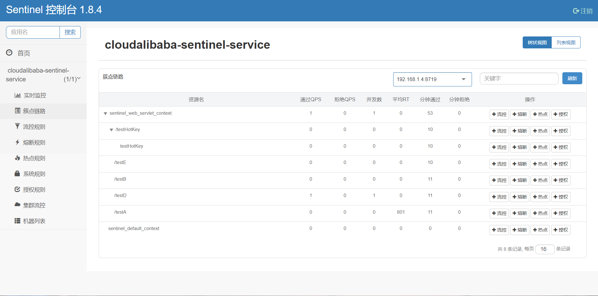
添加规则
QPS--每秒请求数
并发线程数
高级选项
关联
/testB 每秒请求（QPS）超过1 会导致 /testA 失败
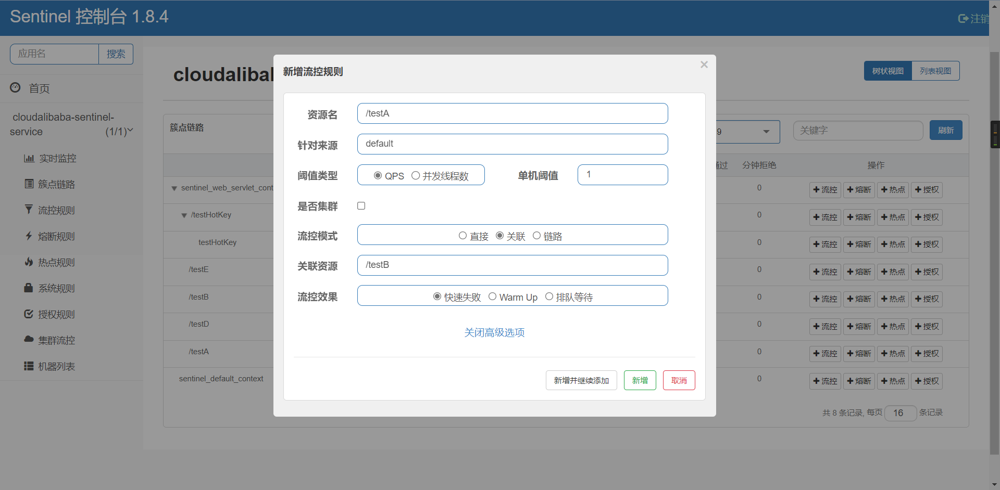
链路
A-->B的请求失败不会导致C-->B的请求失败
流控效果
快速失败、warm up、排队等待
快速失败
warm up
当流量突然增大的时候，我们常常会希望系统从空闲状态到繁忙状态的切换的时间长一些。即如果系统在此之前长期处于空闲的状态，我们希望处理请求的数量是缓步的增多，经过预期的时间以后，到达系统处理请求个数的最大值。Warm Up（冷启动，预热）模式就是为了实现这个目的的。
这个场景主要用于启动需要额外开销的场景，例如建立数据库连接等。
它的实现是在 Guava 的算法的基础上实现的。然而，和 Guava 的场景不同，Guava 的场景主要用于调节请求的间隔，即 Leaky Bucket，而 Sentinel 则主要用于控制每秒的 QPS，即我们满足每秒通过的 QPS 即可，我们不需要关注每个请求的间隔，换言之，我们更像一个 Token Bucket。
我们用桶里剩余的令牌来量化系统的使用率。假设系统每秒的处理能力为 b,系统每处理一个请求，就从桶中取走一个令牌；每秒这个令牌桶会自动掉落b个令牌。令牌桶越满，则说明系统的利用率越低；当令牌桶里的令牌高于某个阈值之后，我们称之为令牌桶"饱和"。
当令牌桶饱和的时候，基于 Guava 的计算上，我们可以推出下面两个公式:
rate(c)=m*c+ coldrate
其中，rate 为当前请求和上一个请求的间隔时间，而 rate 是和令牌桶中的高于阈值的令牌数量成线形关系的。cold rate 则为当桶满的时候，请求和请求的最大间隔。通常是 coldFactor * rate(stable)。
通常冷启动的过程系统允许通过的 QPS 曲线如下图所示：

默认 coldFactor 为 3，即请求 QPS 从 threshold / 3 开始，经预热时长逐渐升至设定的 QPS 阈值。
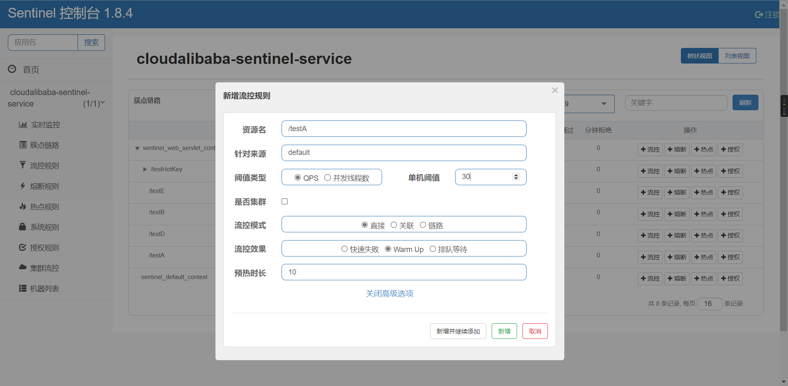
开始预热值30/3=10
在10秒之后上升到30
排队等待
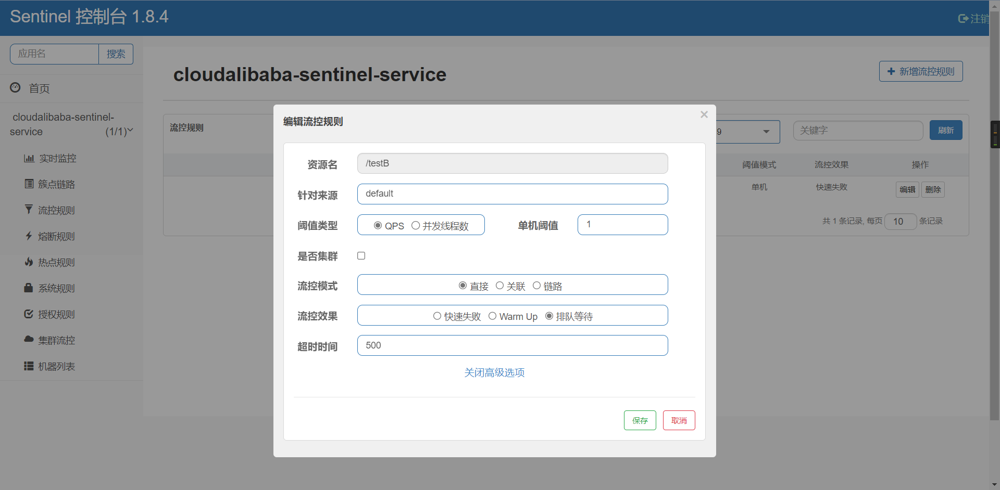
服务降级/熔断
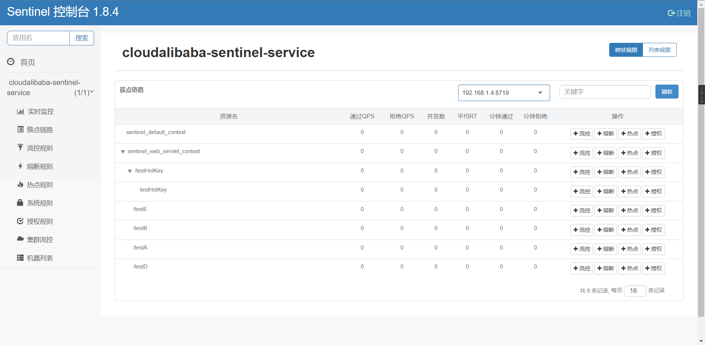
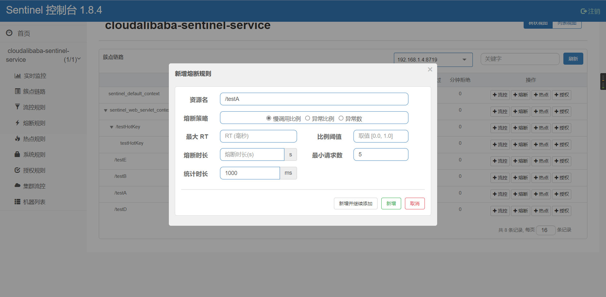
慢调用比例
RT 最大的响应时间
比例阈值 0-1
熔断时长
异常比例
异常数
热点key
对请求的某一个参数进行监控限制
@HystrixCommand 到 @SentinelResource
@GetMapping("/testHotKey") @SentinelResource(value = "testHotKey",blockHandler = "deal_testHotKey") public String testHotKey(@RequestParam(value = "p1",required = false) String p1, @RequestParam(value = "p2",required = false) String p2) { //int age = 10/0; return "------testHotKey"; } public String deal_testHotKey (String p1, String p2, BlockException exception) { log.info("p1:{} ||| p2:{}",p1,p2); return "p1:"+p1+"||p2:"+p2+"------deal_testHotKey,o(╥﹏╥)o"; //sentinel系统默认的提示：Blocked by Sentinel (flow limiting) }
@SentinelResource(value = "testHotKey",blockHandler = "deal_testHotKey")
自定义降级方法
value = "testHotKey"
可以在控制面板对testHotKey进行监控
也可以不设降级规则，但是系统会返回500错误
@GetMapping("/testHotKey") @SentinelResource(value = "testHotKey") public String testHotKey(@RequestParam(value = "p1",required = false) String p1, @RequestParam(value = "p2",required = false) String p2) { //int age = 10/0; return "------testHotKey"; }
重点: @SentinelResource只处理控制台的规则，服务器内部的异常不会处理
例如: 手动制造异常 int 1 =10/0;
系统还是会报500异常，控制台不会管系统内部的异常，后续有fallback处理
添加热点key规则

参数索引: 0 代表p1参数
参数例外项: 例如p1 = aaa时 允许200 的QPS
可以添加多个选项
系统规则
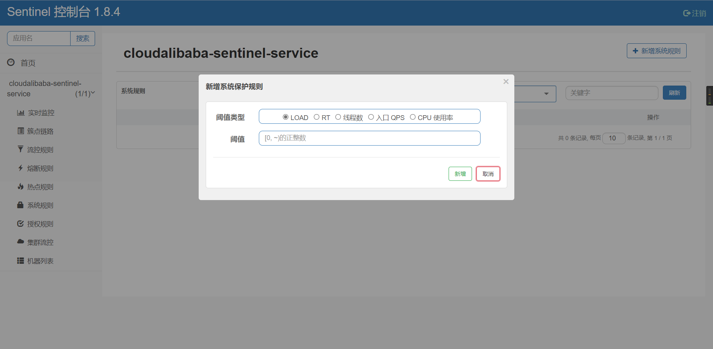
- Load 自适应（仅对 Linux/Unix-like 机器生效）：系统的 load1 作为启发指标，进行自适应系统保护。当系统 load1 超过设定的启发值，且系统当前的并发线程数超过估算的系统容量时才会触发系统保护（BBR 阶段）。系统容量由系统的 maxQps * minRt 估算得出。设定参考值一般是 CPU cores * 2.5。
- 平均 RT：当单台机器上所有入口流量的平均 RT 达到阈值即触发系统保护，单位是毫秒。
- 并发线程数：当单台机器上所有入口流量的并发线程数达到阈值即触发系统保护。
- 入口 QPS：当单台机器上所有入口流量的 QPS 达到阈值即触发系统保护。
- CPU usage（1.5.0+ 版本）：当系统 CPU 使用率超过阈值即触发系统保护（取值范围 0.0-1.0），比较灵敏。
@SentinelResource使用
RateLimitController.java
@RestController public class RateLimitController { @GetMapping("/byResource") @SentinelResource(value = "byResource",blockHandler = "handleException") public CommonResult byResource() { return new CommonResult(200,"按资源名称限流测试OK",new Payment(2020L,"serial001")); } public CommonResult handleException(BlockException exception) { return new CommonResult(444,exception.getClass().getCanonicalName()+"\t 服务不可用"); } @GetMapping("/rateLimit/byUrl") @SentinelResource(value = "byUrl") public CommonResult byUrl() { return new CommonResult(200,"按url限流测试OK",new Payment(2020L,"serial002")); } @GetMapping("/rateLimit/customerBlockHandler") @SentinelResource(value = "customerBlockHandler", blockHandlerClass = CustomerBlockHandler.class, blockHandler = "handlerException2") public CommonResult customerBlockHandler() { return new CommonResult(200,"按客戶自定义",new Payment(2020L,"serial003")); } }
CustomerBlockHandler.java
public class CustomerBlockHandler { public static CommonResult handlerException(BlockException exception) { return new CommonResult(4444,"按客戶自定义,global handlerException----1"); } public static CommonResult handlerException2(BlockException exception) { return new CommonResult(4444,"按客戶自定义,global handlerException----2"); } }
@SentinelResource(value = "byResource",blockHandler = "handleException")
byResource就是资源名
/byResource是url
通过访问URL限流会返回sentinel自带默认的限流处理信息
使用资源名是如果没有设置blockHandle，系统限流会返回500
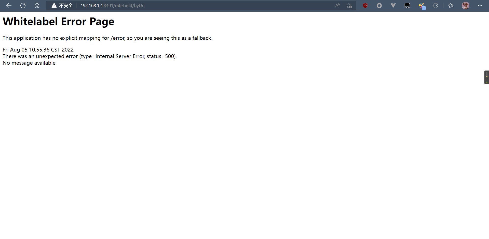
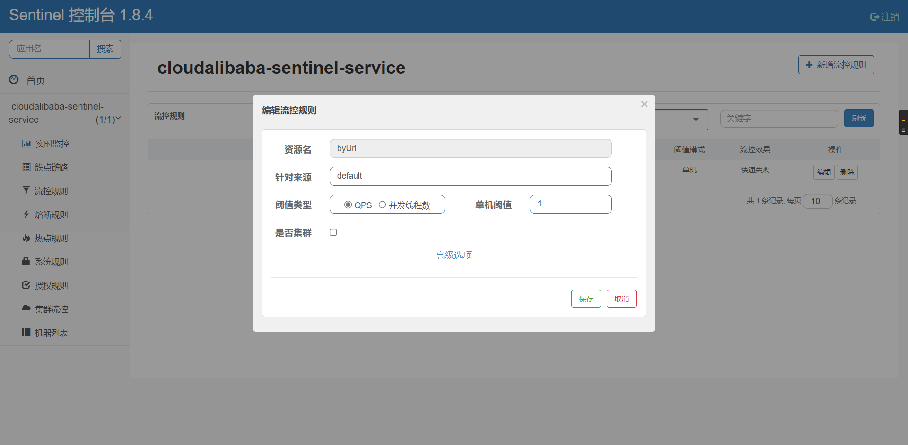
按照URL名配置会
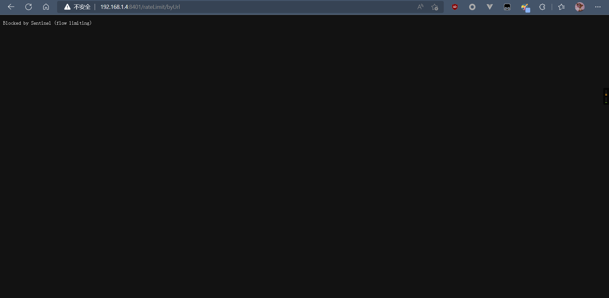
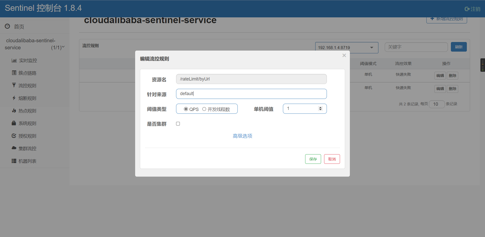
同时配了URL和资源名，URL优先级高
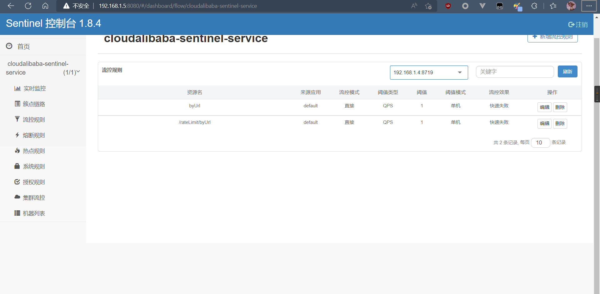
设置了blockHandler，会按照 @SentinelResource(value = "byResource",blockHandler = "handleException") 的handleException方法执行
public CommonResult handleException(BlockException exception) { return new CommonResult(444,exception.getClass().getCanonicalName()+"\t 服务不可用"); }
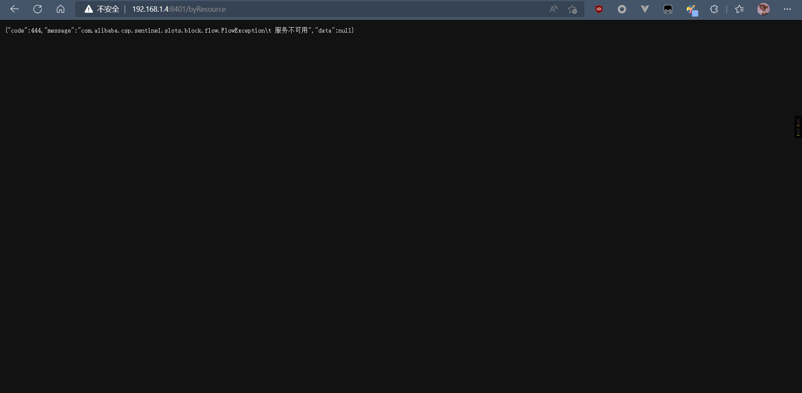
结论:
按照URL配置规则，一切都使用Sentinel默认自带的配置
使用资源名 配置规则时，如果没有配置blockHandler 的方法，系统会报500错误，例如@SentinelResource(value = "byResource")，在控制台配置了byResource规则，超过请求阈值会直接报500错误；
配置了blockHandler 选项时@SentinelResource(value = "byResource",blockHandler = "handleException") ，并且类中有handleException方法时，超过请求阈值时系统会执行handleException方法返回限流规则结果而不是返回500错误提示，如果同时设置了URL和资源名规则，URL规则优先级最高
自定义限流规则
自定义限流类
CustomerBlockHandler.java
public class CustomerBlockHandler { public static CommonResult handlerException(BlockException exception) { return new CommonResult(4444,"按客戶自定义,global handlerException----1"); } public static CommonResult handlerException2(BlockException exception) { return new CommonResult(4444,"按客戶自定义,global handlerException----2"); } }
Controller
@GetMapping("/rateLimit/customerBlockHandler") @SentinelResource(value = "customerBlockHandler", blockHandlerClass = CustomerBlockHandler.class, blockHandler = "handlerException2") public CommonResult customerBlockHandler() { return new CommonResult(200,"按客戶自定义",new Payment(2020L,"serial003")); }
注意:
CustomerBlockHandler.java中的方法时静态方法
@SentinelResource 不要方法private修饰的方法上面，使用时注意使用blockHandler和fallback，value不能为空，defaultFallback选线的方法必须在本类中，同时配置fallback和defaultFallback时只会有fallback生效，fallbackClass 的类方法必需是静态方法，exceptionToIgnore忽略某些异常
Sentinel结合Ribbon负载均衡OpenFeign
服务搭建
服务提供者
cloudalibaba-provider-payment9003
cloudalibaba-provider-payment9004
下面搭建9003 ，9004 复制改启动类和端口号即可
pom.xml
<dependency> <groupId>org.example</groupId> <artifactId>cloud-api-common</artifactId> <version>1.0-SNAPSHOT</version> </dependency> <!--SpringCloud ailibaba nacos --> <dependency> <groupId>com.alibaba.cloud</groupId> <artifactId>spring-cloud-starter-alibaba-nacos-discovery</artifactId> </dependency> <!-- SpringBoot整合Web组件 --> <dependency> <groupId>org.springframework.boot</groupId> <artifactId>spring-boot-starter-web</artifactId> </dependency> <dependency> <groupId>org.springframework.boot</groupId> <artifactId>spring-boot-starter-actuator</artifactId> </dependency>
@SpringBootApplication @EnableDiscoveryClient public class PaymentMain9003 { public static void main(String[] args) { SpringApplication.run(PaymentMain9003.class, args); } }
server: port: 9003 spring: application: name: nacos-payment-provider cloud: nacos: discovery: #server-addr: 192.168.1.5:1111 #nginx代理nacos地址 server-addr: 192.168.1.5:8848 #配置Nacos地址 management: endpoints: web: exposure: include: '*'
@RestController public class PaymentController { @Value("${server.port}") private String serverPort; public static HashMap<Long,Payment> hashMap = new HashMap<>(); static { hashMap.put(1L,new Payment(1L,"28a8c1e3bc2742d8848569891fb42181")); hashMap.put(2L,new Payment(2L,"bba8c1e3bc2742d8848569891ac32182")); hashMap.put(3L,new Payment(3L,"6ua8c1e3bc2742d8848569891xt92183")); } @GetMapping(value = "/paymentSQL/{id}") public CommonResult<Payment> paymentSQL(@PathVariable("id") Long id) { Payment payment = hashMap.get(id); CommonResult<Payment> result = new CommonResult(200,"from mysql,serverPort: "+serverPort,payment); return result; } }
消费者
cloudalibaba-consumer-nacos-order84
pom.xml
<dependency> <groupId>org.example</groupId> <artifactId>cloud-api-common</artifactId> <version>1.0-SNAPSHOT</version> </dependency> <dependency> <groupId>com.alibaba.cloud</groupId> <artifactId>spring-cloud-starter-alibaba-nacos-discovery</artifactId> </dependency> <!--SpringCloud openfeign --> <dependency> <groupId>org.springframework.cloud</groupId> <artifactId>spring-cloud-starter-openfeign</artifactId> </dependency> <!--SpringCloud ailibaba sentinel --> <dependency> <groupId>com.alibaba.cloud</groupId> <artifactId>spring-cloud-starter-alibaba-sentinel</artifactId> </dependency> <!-- SpringBoot整合Web组件 --> <dependency> <groupId>org.springframework.boot</groupId> <artifactId>spring-boot-starter-web</artifactId> </dependency> <dependency> <groupId>org.springframework.boot</groupId> <artifactId>spring-boot-starter-actuator</artifactId> </dependency>
@EnableDiscoveryClient @SpringBootApplication @EnableFeignClients public class OrderNacosMain84 { public static void main(String[] args) { SpringApplication.run(OrderNacosMain84.class, args); } }
server: port: 84 spring: application: name: nacos-order-consumer cloud: nacos: discovery: server-addr: 192.168.1.5:8848 sentinel: transport: #配置Sentinel dashboard地址 dashboard: 192.168.1.5:8080 #默认8719端口，假如被占用会自动从8719开始依次+1扫描,直至找到未被占用的端口 port: 8719 client-ip: 192.168.1.4 #消费者将要去访问的微服务名称(注册成功进nacos的微服务提供者) service-url: nacos-user-service: http://nacos-payment-provider # 激活Sentinel对Feign的支持 feign: sentinel: enabled: true
@Configuration public class ApplicationContextConfig { @Bean @LoadBalanced public RestTemplate getRestTemplate() { return new RestTemplate(); } }
@FeignClient(value = "nacos-payment-provider",fallback = PaymentFallbackService.class) public interface PaymentService { @GetMapping(value = "/paymentSQL/{id}") public CommonResult<Payment> paymentSQL(@PathVariable("id") Long id); }
@Component public class PaymentFallbackService implements PaymentService { @Override public CommonResult<Payment> paymentSQL(Long id) { return new CommonResult<>(44444,"服务降级返回,---PaymentFallbackService",new Payment(id,"errorSerial")); } }
@RestController public class CircleBreakerController { private Logger log = LoggerFactory.getLogger(CircleBreakerController.class); public static final String SERVICE_URL = "http://nacos-payment-provider"; @Resource private RestTemplate restTemplate; @RequestMapping("/consumer/fallback/{id}") //@SentinelResource(value = "fallback") //没有配置 //@SentinelResource(value = "fallback",fallback = "handlerFallback") //fallback只负责业务异常 //@SentinelResource(value = "fallback",blockHandler = "blockHandler") //blockHandler只负责sentinel控制台配置违规 @SentinelResource(value = "fallback",fallback = "handlerFallback",blockHandler = "blockHandler", exceptionsToIgnore = {IllegalArgumentException.class}) public CommonResult<Payment> fallback(@PathVariable Long id) { CommonResult<Payment> result = restTemplate.getForObject(SERVICE_URL + "/paymentSQL/"+id,CommonResult.class,id); if (id == 4) { throw new IllegalArgumentException ("IllegalArgumentException,非法参数异常...."); }else if (result.getData() == null) { throw new NullPointerException ("NullPointerException,该ID没有对应记录,空指针异常"); } return result; } //本例是fallback public CommonResult handlerFallback(@PathVariable Long id, Throwable e) { Payment payment = new Payment(id,"null"); return new CommonResult<>(444,"兜底异常handlerFallback,exception内容 "+e.getMessage(),payment); } //本例是blockHandler public CommonResult blockHandler(@PathVariable Long id, BlockException blockException) { Payment payment = new Payment(id,"null"); return new CommonResult<>(445,"blockHandler-sentinel限流,无此流水: blockException "+blockException.getMessage(),payment); } //==================OpenFeign @Resource private PaymentService paymentService; @GetMapping(value = "/consumer/paymentSQL/{id}") public CommonResult<Payment> paymentSQL(@PathVariable("id") Long id) { return paymentService.paymentSQL(id); } }
Sentinel持久化
持久化进nacos注册中心
<!--SpringCloud ailibaba sentinel-datasource-nacos 后续做持久化用到--> <dependency> <groupId>com.alibaba.csp</groupId> <artifactId>sentinel-datasource-nacos</artifactId> </dependency>
server: port: 8401 spring: application: name: cloudalibaba-sentinel-service cloud: nacos: discovery: server-addr: 192.168.1.5:8848 #Nacos服务注册中心地址 sentinel: transport: dashboard: 192.168.1.5:8080 #配置Sentinel dashboard地址 port: 8719 #sentinel 会启动一个服务与dashboard面板通信，如果端口被占用会自动+1知道找到没有被占用端口，默认就是8719 client-ip: 192.168.1.4 # 本机ip datasource: ds1: nacos: server-addr: localhost:8848 dataId: cloudalibaba-sentinel-service groupId: DEFAULT_GROUP data-type: json rule-type: flow management: endpoints: web: exposure: include: '*' feign: sentinel: enabled: true # 激活Sentinel对Feign的支持
持久化配置
spring: application: name: cloudalibaba-sentinel-service cloud: nacos: discovery: server-addr: 192.168.1.5:8848 #Nacos服务注册中心地址 sentinel: transport: dashboard: 192.168.1.5:8080 #配置Sentinel dashboard地址 port: 8719 #sentinel 会启动一个服务与dashboard面板通信，如果端口被占用会自动+1知道找到没有被占用端口，默认就是8719 client-ip: 192.168.1.4 # 本机ip datasource: #持久化sentinel ds1: nacos: server-addr: 192.168.1.5:8848 dataId: cloudalibaba-sentinel-service groupId: DEFAULT_GROUP data-type: json rule-type: flow
[ { "resource": "test1", "limitApp": "default", "grade": 1, "count": 2, "strategy": 0, "controlBehavior": 0 "clusterMode": false } ]
---------------具体内容含义-----------------
resource：资源名称；
limitApp：来源应用；
grade：阈值类型，0表示线程数，1表示QPS；
count：单机阈值；
strategy：流控模式，0表示直接，1表示关联，2表示链路；
controlBehavior：流控效果，0表示快速失败，1表示Warm Up，2表示排队等待；
clusterMode：是否集群。
17、Seta分布式事务
下载 1.5.1
https://seata.io/zh-cn/blog/download.html
启动Server
Server端存储模式（store.mode）现有file、db、redis三种（后续将引入raft,mongodb），file模式无需改动，直接启动即可，下面专门讲下db和redis启动步骤。
注： file模式为单机模式，全局事务会话信息内存中读写并持久化本地文件root.data，性能较高;
db模式为高可用模式，全局事务会话信息通过db共享，相应性能差些;
redis模式Seata-Server 1.3及以上版本支持,性能较高,存在事务信息丢失风险,请提前配置合适当前场景的redis持久化配置.
http://192.168.1.5:7091/#/login
建表(仅db)
全局事务会话信息由3块内容构成，全局事务-->分支事务-->全局锁，对应表global_table、branch_table、lock_table
-- -------------------------------- The script used when storeMode is 'db' -------------------------------- -- the table to store GlobalSession data CREATE TABLE IF NOT EXISTS `global_table` ( `xid` VARCHAR(128) NOT NULL, `transaction_id` BIGINT, `status` TINYINT NOT NULL, `application_id` VARCHAR(32), `transaction_service_group` VARCHAR(32), `transaction_name` VARCHAR(128), `timeout` INT, `begin_time` BIGINT, `application_data` VARCHAR(2000), `gmt_create` DATETIME, `gmt_modified` DATETIME, PRIMARY KEY (`xid`), KEY `idx_status_gmt_modified` (`status` , `gmt_modified`), KEY `idx_transaction_id` (`transaction_id`) ) ENGINE = InnoDB DEFAULT CHARSET = utf8mb4; -- the table to store BranchSession data CREATE TABLE IF NOT EXISTS `branch_table` ( `branch_id` BIGINT NOT NULL, `xid` VARCHAR(128) NOT NULL, `transaction_id` BIGINT, `resource_group_id` VARCHAR(32), `resource_id` VARCHAR(256), `branch_type` VARCHAR(8), `status` TINYINT, `client_id` VARCHAR(64), `application_data` VARCHAR(2000), `gmt_create` DATETIME(6), `gmt_modified` DATETIME(6), PRIMARY KEY (`branch_id`), KEY `idx_xid` (`xid`) ) ENGINE = InnoDB DEFAULT CHARSET = utf8mb4; -- the table to store lock data CREATE TABLE IF NOT EXISTS `lock_table` ( `row_key` VARCHAR(128) NOT NULL, `xid` VARCHAR(128), `transaction_id` BIGINT, `branch_id` BIGINT NOT NULL, `resource_id` VARCHAR(256), `table_name` VARCHAR(32), `pk` VARCHAR(36), `status` TINYINT NOT NULL DEFAULT '0' COMMENT '0:locked ,1:rollbacking', `gmt_create` DATETIME, `gmt_modified` DATETIME, PRIMARY KEY (`row_key`), KEY `idx_status` (`status`), KEY `idx_branch_id` (`branch_id`), KEY `idx_xid` (`xid`) ) ENGINE = InnoDB DEFAULT CHARSET = utf8mb4; CREATE TABLE IF NOT EXISTS `distributed_lock` ( `lock_key` CHAR(20) NOT NULL, `lock_value` VARCHAR(20) NOT NULL, `expire` BIGINT, primary key (`lock_key`) ) ENGINE = InnoDB DEFAULT CHARSET = utf8mb4; INSERT INTO `distributed_lock` (lock_key, lock_value, expire) VALUES ('AsyncCommitting', ' ', 0); INSERT INTO `distributed_lock` (lock_key, lock_value, expire) VALUES ('RetryCommitting', ' ', 0); INSERT INTO `distributed_lock` (lock_key, lock_value, expire) VALUES ('RetryRollbacking', ' ', 0); INSERT INTO `distributed_lock` (lock_key, lock_value, expire) VALUES ('TxTimeoutCheck', ' ', 0);
修改store.mode
启动包: seata-->conf-->application.yml，修改store.mode="db或者redis"
源码: 根目录-->seata-server-->resources-->application.yml，修改store.mode="db或者redis"
修改数据库连接|redis属性配置
启动包: seata-->conf-->application.example.yml中附带额外配置，将其db|redis相关配置复制至application.yml,进行修改store.db或store.redis相关属性。
源码: 根目录-->seata-server-->resources-->application.example.yml中附带额外配置，将其db|redis相关配置复制至application.yml,进行修改store.db或store.redis相关属性。
完整配置application.yml
server: port: 7091 spring: application: name: seata-server logging: config: classpath:logback-spring.xml file: path: ${user.home}/logs/seata extend: logstash-appender: destination: 127.0.0.1:4560 kafka-appender: bootstrap-servers: 127.0.0.1:9092 topic: logback_to_logstash console: user: username: seata password: seata seata: config: # support: nacos, consul, apollo, zk, etcd3 #type: file type: nacos nacos: server-addr: 192.168.1.5:8848 namespace: group: SEATA_GROUP username: password: ##if use MSE Nacos with auth, mutex with username/password attribute #access-key: "" #secret-key: "" data-id: seataServer.properties registry: # support: nacos, eureka, redis, zk, consul, etcd3, sofa #type: file type: nacos preferred-networks: 30.240.* nacos: application: seata-server server-addr: 192.168.1.5:8848 group: SEATA_GROUP namespace: cluster: default username: nacos password: nacos ##if use MSE Nacos with auth, mutex with username/password attribute #access-key: "" #secret-key: "" #store: # support: file 、 db 、 redis #mode: file #mode: db #db: #datasource: druid #db-type: mysql #driver-class-name: com.mysql.jdbc.Driver #com.mysql.cj.jdbc.Driver #url: jdbc:mysql://192.168.1.5:3306/seata?rewriteBatchedStatements=true&serverTimezone=Asia/Shanghai&useUnicode=true&characterEncoding=utf-8 #user: mysql #password: mysql #min-conn: 5 #max-conn: 100 #global-table: global_table #branch-table: branch_table #lock-table: lock_table #distributed-lock-table: distributed_lock #query-limit: 100 #max-wait: 5000 # server: # service-port: 8091 #If not configured, the default is '${server.port} + 1000' security: secretKey: SeataSecretKey0c382ef121d778043159209298fd40bf3850a017 tokenValidityInMilliseconds: 1800000 ignore: urls: /,/**/*.css,/**/*.js,/**/*.html,/**/*.map,/**/*.svg,/**/*.png,/**/*.ico,/console-fe/public/**,/api/v1/auth/login
在nocas注册中心添加配置seataServer.properties
service.vgroupMapping.seata-order-service-fescar-service-group=default service.vgroupMapping.seata-storage-service-fescar-service-group=default service.vgroupMapping.seata-account-service-fescar-service-group=default service.vgroupMapping.my_test_tx_group=default service.vgroupMapping.default_tx_group=default service.vgroupMapping.custom_test_tx_group=default store.mode=db #store.redis.host=127.0.0.1 #store.redis.port=6379 #store.redis.maxConn=10 #store.redis.minConn=1 #store.redis.database=0 #store.redis.queryLimit=100 #store.lock.mode=db #store.session.mode=db #store.publicKey= store.db.datasource=druid store.db.dbType=mysql store.db.driverClassName=com.mysql.jdbc.Driver store.db.url=jdbc:mysql://192.168.1.5:3306/seata?rewriteBatchedStatements=true&serverTimezone=Asia/Shanghai&useUnicode=true&characterEncoding=utf-8 store.db.user=root store.db.password=root store.db.minConn=5 store.db.maxConn=30 store.db.globalTable=global_table store.db.branchTable=branch_table store.db.distributedLockTable=distributed_lock store.db.queryLimit=100 store.db.lockTable=lock_table store.db.maxWait=5000 #Transaction rule configuration, only for the server server.recovery.committingRetryPeriod=1000 server.recovery.asynCommittingRetryPeriod=1000 server.recovery.rollbackingRetryPeriod=1000 server.recovery.timeoutRetryPeriod=1000 server.maxCommitRetryTimeout=-1 server.maxRollbackRetryTimeout=-1 server.rollbackRetryTimeoutUnlockEnable=false server.distributedLockExpireTime=10000 server.xaerNotaRetryTimeout=60000 server.session.branchAsyncQueueSize=5000 server.session.enableBranchAsyncRemove=false #Transaction rule configuration, only for the client client.rm.asyncCommitBufferLimit=10000 client.rm.lock.retryInterval=10 client.rm.lock.retryTimes=30 client.rm.lock.retryPolicyBranchRollbackOnConflict=true client.rm.reportRetryCount=5 client.rm.tableMetaCheckEnable=true client.rm.tableMetaCheckerInterval=60000 client.rm.sqlParserType=druid client.rm.reportSuccessEnable=false client.rm.sagaBranchRegisterEnable=false client.rm.sagaJsonParser=fastjson client.rm.tccActionInterceptorOrder=-2147482648 client.tm.commitRetryCount=5 client.tm.rollbackRetryCount=5 client.tm.defaultGlobalTransactionTimeout=60000 client.tm.degradeCheck=false client.tm.degradeCheckAllowTimes=10 client.tm.degradeCheckPeriod=2000 client.tm.interceptorOrder=-2147482648 client.undo.dataValidation=true client.undo.logSerialization=jackson client.undo.onlyCareUpdateColumns=true server.undo.logSaveDays=7 server.undo.logDeletePeriod=86400000 client.undo.logTable=undo_log client.undo.compress.enable=true client.undo.compress.type=zip client.undo.compress.threshold=64k #For TCC transaction mode tcc.fence.logTableName=tcc_fence_log tcc.fence.cleanPeriod=1h #Log rule configuration, for client and server log.exceptionRate=100 #Metrics configuration, only for the server metrics.enabled=false metrics.registryType=compact metrics.exporterList=prometheus metrics.exporterPrometheusPort=9898 transport.type=TCP transport.server=NIO transport.heartbeat=true transport.enableTmClientBatchSendRequest=false transport.enableRmClientBatchSendRequest=true transport.enableTcServerBatchSendResponse=false transport.rpcRmRequestTimeout=30000 transport.rpcTmRequestTimeout=30000 transport.rpcTcRequestTimeout=30000 transport.threadFactory.bossThreadPrefix=NettyBoss transport.threadFactory.workerThreadPrefix=NettyServerNIOWorker transport.threadFactory.serverExecutorThreadPrefix=NettyServerBizHandler transport.threadFactory.shareBossWorker=false transport.threadFactory.clientSelectorThreadPrefix=NettyClientSelector transport.threadFactory.clientSelectorThreadSize=1 transport.threadFactory.clientWorkerThreadPrefix=NettyClientWorkerThread transport.threadFactory.bossThreadSize=1 transport.threadFactory.workerThreadSize=default transport.shutdown.wait=3 transport.serialization=seata transport.compressor=none
启动
- 源码启动: 执行ServerApplication.java的main方法
- 命令启动: seata-server.sh -h 127.0.0.1 -p 8091 -m db
@Transactional 本地事务
@GlobalTransactional分布式事务
服务
create database seata_order; create database seata_account; create database seata_storage
create database seata_order; create database seata_account; create database seata_storage; use seata_order; CREATE TABLE t_order ( `id` BIGINT(11) NOT NULL AUTO_INCREMENT PRIMARY KEY, `user_id` BIGINT(11) DEFAULT NULL COMMENT '用户id', `product_id` BIGINT(11) DEFAULT NULL COMMENT '产品id', `count` INT(11) DEFAULT NULL COMMENT '数量', `money` DECIMAL(11,0) DEFAULT NULL COMMENT '金额', `status` INT(1) DEFAULT NULL COMMENT '订单状态：0：创建中；1：已完结' ) ENGINE=INNODB AUTO_INCREMENT=7 DEFAULT CHARSET=utf8; SELECT * FROM t_order; use seata_storage; CREATE TABLE t_storage ( `id` BIGINT(11) NOT NULL AUTO_INCREMENT PRIMARY KEY, `product_id` BIGINT(11) DEFAULT NULL COMMENT '产品id', `total` INT(11) DEFAULT NULL COMMENT '总库存', `used` INT(11) DEFAULT NULL COMMENT '已用库存', `residue` INT(11) DEFAULT NULL COMMENT '剩余库存' ) ENGINE=INNODB AUTO_INCREMENT=2 DEFAULT CHARSET=utf8; INSERT INTO seata_storage.t_storage (`id`, `product_id`, `total`, `used`, `residue`) VALUES ('1', '1', '100', '0', '100'); SELECT * FROM t_storage; use seata_account; CREATE TABLE t_account ( `id` BIGINT(11) NOT NULL AUTO_INCREMENT PRIMARY KEY COMMENT 'id', `user_id` BIGINT(11) DEFAULT NULL COMMENT '用户id', `total` DECIMAL(10,0) DEFAULT NULL COMMENT '总额度', `used` DECIMAL(10,0) DEFAULT NULL COMMENT '已用余额', `residue` DECIMAL(10,0) DEFAULT '0' COMMENT '剩余可用额度' ) ENGINE=INNODB AUTO_INCREMENT=2 DEFAULT CHARSET=utf8; INSERT INTO seata_account.t_account(`id`, `user_id`, `total`, `used`, `residue`) VALUES ('1', '1', '1000', '0', '1000'); SELECT * FROM t_account; ###回滚记录表 CREATE TABLE `undo_log`( `id` BIGINT(20) NOT NULL auto_increment, `branch_id` BIGINT(20) NOT NULL, `xid` VARCHAR(100) NOT NULL, `context` VARCHAR(128) NOT NULL, `rollback_info` LONGBLOB NOT NULL, `log_status` INT(11) NOT NULL, `log_created` DATETIME NOT NULL, `log_modified` DATETIME NOT NULL, `ext` VARCHAR(100) DEFAULT NULL, PRIMARY KEY(`id`), UNIQUE KEY `ux_undo_log`(`xid`,`branch_id`) )ENGINE=INNODB auto_increment=1 DEFAULT CHARSET=utf8;
新建订单、存储、账户模块
seata-order-service2001、seata-storage-service2002、seata-account-service2003
seata-order-service2001
pom.xml
<dependency> <groupId>io.seata</groupId> <artifactId>seata-spring-boot-starter</artifactId> <version>1.5.1</version> </dependency> <dependency> <groupId>io.seata</groupId> <artifactId>seata-all</artifactId> <version>1.5.1</version> </dependency> <dependency> <groupId>com.alibaba.cloud</groupId> <artifactId>spring-cloud-starter-alibaba-seata</artifactId> <exclusions> <exclusion> <groupId>io.seata</groupId> <artifactId>seata-spring-boot-starter</artifactId> </exclusion> </exclusions> </dependency> <!--nacos--> <dependency> <groupId>com.alibaba.cloud</groupId> <artifactId>spring-cloud-starter-alibaba-nacos-discovery</artifactId> </dependency> <!--feign--> <dependency> <groupId>org.springframework.cloud</groupId> <artifactId>spring-cloud-starter-openfeign</artifactId> </dependency> <!--web-actuator--> <dependency> <groupId>org.springframework.boot</groupId> <artifactId>spring-boot-starter-web</artifactId> </dependency> <dependency> <groupId>org.springframework.boot</groupId> <artifactId>spring-boot-starter-actuator</artifactId> </dependency> <!--mysql-druid--> <dependency> <groupId>mysql</groupId> <artifactId>mysql-connector-java</artifactId> <version>5.1.37</version> </dependency> <dependency> <groupId>com.alibaba</groupId> <artifactId>druid-spring-boot-starter</artifactId> <version>1.1.10</version> </dependency> <dependency> <groupId>org.mybatis.spring.boot</groupId> <artifactId>mybatis-spring-boot-starter</artifactId> <version>2.0.0</version> </dependency> <dependency> <groupId>org.example</groupId> <artifactId>cloud-api-common</artifactId> <version>1.0-SNAPSHOT</version> </dependency> <dependency> <groupId>org.springdoc</groupId> <artifactId>springdoc-openapi-ui</artifactId> <version>1.6.9</version> </dependency>
@EnableDiscoveryClient @EnableFeignClients //@SpringBootApplication(exclude = DataSourceAutoConfiguration.class)//取消数据源的自动创建 @SpringBootApplication public class SeataOrderMainApp2001 { public static void main(String[] args) { SpringApplication.run(SeataOrderMainApp2001.class, args); } }
server: port: 2001 spring: application: name: seata-order-service cloud: nacos: discovery: server-addr: 192.168.1.5:8848 #Nacos服务注册中心地址 datasource: driver-class-name: com.mysql.jdbc.Driver url: jdbc:mysql://192.168.1.5:3306/seata_order?serverTimezone=Asia/Shanghai&useUnicode=true&characterEncoding=utf-8&allowMultiQueries=true username: root password: root management: endpoints: web: exposure: include: '*' feign: hystrix: enabled: false logging: level: io: seata: info file: name: ./order.log ## seata 属性配置 seata: enabled: true tx-service-group: custom_test_tx_group # 是否自动开启数据源代理 enable-auto-data-source-proxy: true # 数据源代理模式，使用AT模式 data-source-proxy-mode: AT client: rm: lock: # 校验或占用全局锁重试间隔，单位ms retry-interval: 10 # 校验或占用全局锁重试次数 retry-times: 30 # 分支事务与其它全局回滚事务冲突时锁策略,true，优先释放本地锁让回滚成功 retry-policy-branch-rollback-on-conflict: true tm: # 一阶段全局提交结果上报TC重试次数 commit-retry-count: 5 # 一阶段全局回滚结果上报TC重试次数 rollback-retry-count: 5 # 分布式事物超时时间 default-global-transaction-timeout: 600000 # 降级开关,false 不打开 degrade-check: false degrade-check-period: 2000 degrade-check-allow-times: 10 undo: log-serialization: jackson # 注册中心，需要和 seata server 保持一致 registry: type: nacos nacos: application: seata-server group: SEATA_GROUP server-addr: 192.168.1.5:8848 username: nacos password: nacos # 配置中心，需要和 seata server 保持一致 config: type: nacos nacos: serverAddr: 192.168.1.5:8848 data-id: seataServer.properties group: SEATA_GROUP service: # 全局事务开关 disable-global-transaction: false vgroupMapping: default_tx_group: default # default 集群 log: exception-rate: 100 mybatis: #config-location: classpath:mapper/* type-aliases-package: com.qibria.cloud.alibaba.domain mapperLocations: classpath:mapper/* # swagger-ui custom path springdoc: api-docs: enabled: true swagger-ui: path: /order.html urls-primary-name: qibria packages-to-scan: com.qibria.cloud.alibaba.controller # group-configs: # - group: public # displayName: public # #packagesToScan: com.qibria.cloud.alibaba.controller # pathsToMatch: /** # - group: admin # displayName: admin # pathsToMatch: /** # #packagesToScan: com.qibria.cloud.alibaba.controller ribbon: #指的是建立连接所用的时间，适用于网络状况正常的情况下,两端连接所用的时间 ReadTimeout: 10000 #指的是建立连接后从服务器读取到可用资源所用的时间 ConnectTimeout: 10000
public class Order { private Long id; private Long userId; private Long productId; private Integer count; private BigDecimal money; private Integer status; //订单状态：0：创建中；1：已完结 public Order() { } public Order(Long id, Long userId, Long productId, Integer count, BigDecimal money, Integer status) { this.id = id; this.userId = userId; this.productId = productId; this.count = count; this.money = money; this.status = status; } public Long getId() { return id; } public void setId(Long id) { this.id = id; } public Long getUserId() { return userId; } public void setUserId(Long userId) { this.userId = userId; } public Long getProductId() { return productId; } public void setProductId(Long productId) { this.productId = productId; } public Integer getCount() { return count; } public void setCount(Integer count) { this.count = count; } public BigDecimal getMoney() { return money; } public void setMoney(BigDecimal money) { this.money = money; } public Integer getStatus() { return status; } public void setStatus(Integer status) { this.status = status; } @Override public String toString() { return "Order{" + "id=" + id + ", userId=" + userId + ", productId=" + productId + ", count=" + count + ", money=" + money + ", status=" + status + '}'; } }
@Mapper public interface OrderDao { //1 新建订单 void create(Order order); //2 修改订单状态，从零改为1 void update(@Param("userId") Long userId, @Param("status") Integer status); }
mapper/OrderMapper.xml
<?xml version="1.0" encoding="UTF-8" ?> <!DOCTYPE mapper PUBLIC "-//mybatis.org//DTD Mapper 3.0//EN" "http://mybatis.org/dtd/mybatis-3-mapper.dtd" > <mapper namespace="com.qibria.cloud.alibaba.dao.OrderDao"> <resultMap id="BaseResultMap" type="Order"> <id column="id" property="id" jdbcType="BIGINT"/> <result column="user_id" property="userId" jdbcType="BIGINT"/> <result column="product_id" property="productId" jdbcType="BIGINT"/> <result column="count" property="count" jdbcType="INTEGER"/> <result column="money" property="money" jdbcType="DECIMAL"/> <result column="status" property="status" jdbcType="INTEGER"/> </resultMap> <insert id="create"> insert into seata_order.t_order (id,user_id,product_id,count,money,status) values (null,#{userId},#{productId},#{count},#{money},0); </insert> <update id="update"> update seata_order.t_order set status = 1 where user_id=#{userId} and status = #{status}; </update> </mapper>
public interface OrderService { void create(Order order); }
@Service public class OrderServiceImpl implements OrderService { private final Logger log = LoggerFactory.getLogger(OrderServiceImpl.class); @Resource private OrderDao orderDao; @Resource private StorageService storageService; @Resource private AccountService accountService; /** * 创建订单->调用库存服务扣减库存->调用账户服务扣减账户余额->修改订单状态 * 简单说：下订单->扣库存->减余额->改状态 */ @Override @GlobalTransactional(name = "custom_test_tx_group",rollbackFor = Exception.class) public void create(Order order) { log.info("----->开始新建订单"); //1 新建订单 orderDao.create(order); //2 扣减库存 log.info("----->订单微服务开始调用库存，做扣减Count"); storageService.decrease(order.getProductId(),order.getCount()); log.info("----->订单微服务开始调用库存，做扣减end"); //3 扣减账户 log.info("----->订单微服务开始调用账户，做扣减Money"); accountService.decrease(order.getUserId(),order.getMoney()); log.info("----->订单微服务开始调用账户，做扣减end"); //4 修改订单状态，从零到1,1代表已经完成 log.info("----->修改订单状态开始"); orderDao.update(order.getUserId(),0); log.info("----->修改订单状态结束"); log.info("----->下订单结束了，O(∩_∩)O哈哈~"); } }
@FeignClient(value = "seata-account-service") public interface AccountService { @PostMapping(value = "/account/decrease") CommonResult decrease(@RequestParam("userId") Long userId, @RequestParam("money") BigDecimal money); }
@FeignClient(value = "seata-storage-service") public interface StorageService { @PostMapping(value = "/storage/decrease") CommonResult decrease(@RequestParam("productId") Long productId, @RequestParam("count") Integer count); }
@RestController public class OrderController { @Resource private OrderService orderService; @GetMapping("/order/create") public CommonResult create(Order order) { orderService.create(order); return new CommonResult(200,"订单创建成功"); } }
seata-storage-service2002
@EnableDiscoveryClient @EnableFeignClients //@SpringBootApplication(exclude = DataSourceAutoConfiguration.class)//取消数据源的自动创建 @SpringBootApplication public class SeataStorageServiceApplication2002{ public static void main(String[] args) { SpringApplication.run(SeataStorageServiceApplication2002.class, args); } }
server: port: 2002 spring: application: name: seata-storage-service cloud: nacos: discovery: server-addr: 192.168.1.5:8848 #Nacos服务注册中心地址 datasource: driver-class-name: com.mysql.jdbc.Driver url: jdbc:mysql://192.168.1.5:3306/seata_storage?serverTimezone=Asia/Shanghai&useUnicode=true&characterEncoding=utf-8&allowMultiQueries=true username: root password: root management: endpoints: web: exposure: include: '*' feign: hystrix: enabled: false logging: level: io: seata: info file: name: ./storage.log mybatis: #config-location: classpath:mapper/*.xml type-aliases-package: com.qibria.cloud.alibaba.domain mapper-locations: classpath:mapper/*.xml ## seata 属性配置 seata: enabled: true tx-service-group: custom_test_tx_group # 是否自动开启数据源代理 enable-auto-data-source-proxy: true # 数据源代理模式，使用AT模式 data-source-proxy-mode: AT client: rm: lock: # 校验或占用全局锁重试间隔，单位ms retry-interval: 10 # 校验或占用全局锁重试次数 retry-times: 30 # 分支事务与其它全局回滚事务冲突时锁策略,true，优先释放本地锁让回滚成功 retry-policy-branch-rollback-on-conflict: true tm: # 一阶段全局提交结果上报TC重试次数 commit-retry-count: 5 # 一阶段全局回滚结果上报TC重试次数 rollback-retry-count: 5 # 分布式事物超时时间 default-global-transaction-timeout: 600000 # 降级开关,false 不打开 degrade-check: false degrade-check-period: 2000 degrade-check-allow-times: 10 undo: log-serialization: jackson # 注册中心，需要和 seata server 保持一致 registry: type: nacos nacos: application: seata-server group: SEATA_GROUP server-addr: 192.168.1.5:8848 username: nacos password: nacos # 配置中心，需要和 seata server 保持一致 config: type: nacos nacos: serverAddr: 192.168.1.5:8848 data-id: seataServer.properties group: SEATA_GROUP service: # 全局事务开关 disable-global-transaction: false vgroupMapping: default_tx_group: default # default 集群 log: exception-rate: 100
package com.qibria.cloud.alibaba.domain; public class Storage { private Long id; /** * 产品id */ private Long productId; /** * 总库存 */ private Integer total; /** * 已用库存 */ private Integer used; /** * 剩余库存 */ private Integer residue; public Storage() { } public Storage(Long id, Long productId, Integer total, Integer used, Integer residue) { this.id = id; this.productId = productId; this.total = total; this.used = used; this.residue = residue; } public Long getId() { return id; } public void setId(Long id) { this.id = id; } public Long getProductId() { return productId; } public void setProductId(Long productId) { this.productId = productId; } public Integer getTotal() { return total; } public void setTotal(Integer total) { this.total = total; } public Integer getUsed() { return used; } public void setUsed(Integer used) { this.used = used; } public Integer getResidue() { return residue; } public void setResidue(Integer residue) { this.residue = residue; } @Override public String toString() { return "Storage{" + "id=" + id + ", productId=" + productId + ", total=" + total + ", used=" + used + ", residue=" + residue + '}'; } }
@Mapper public interface StorageDao { //扣减库存 void decrease(@Param("productId") Long productId, @Param("count") Integer count); }
<?xml version="1.0" encoding="UTF-8" ?> <!DOCTYPE mapper PUBLIC "-//mybatis.org//DTD Mapper 3.0//EN" "http://mybatis.org/dtd/mybatis-3-mapper.dtd" > <mapper namespace="com.qibria.cloud.alibaba.dao.StorageDao"> <resultMap id="BaseResultMap" type="Storage"> <id column="id" property="id" jdbcType="BIGINT"/> <result column="product_id" property="productId" jdbcType="BIGINT"/> <result column="total" property="total" jdbcType="INTEGER"/> <result column="used" property="used" jdbcType="INTEGER"/> <result column="residue" property="residue" jdbcType="INTEGER"/> </resultMap> <update id="decrease"> UPDATE seata_storage.t_storage SET used = used + #{count}, residue = residue - #{count} WHERE product_id = #{productId} </update> </mapper>
public interface StorageService { /** * 扣减库存 */ void decrease(Long productId, Integer count); }
@Service public class StorageServiceImpl implements StorageService { private static final Logger LOGGER = LoggerFactory.getLogger(StorageServiceImpl.class); @Resource private StorageDao storageDao; /** * 扣减库存 */ @Override public void decrease(Long productId, Integer count) { LOGGER.info("------->storage-service中扣减库存开始"); storageDao.decrease(productId,count); LOGGER.info("------->storage-service中扣减库存结束"); } }
@RestController public class StorageController { @Resource private StorageService storageService; /** * 扣减库存 */ @RequestMapping("/storage/decrease") public CommonResult decrease(Long productId, Integer count) { storageService.decrease(productId, count); return new CommonResult(200,"扣减库存成功！"); } }
seata-account-service2003
@EnableDiscoveryClient @EnableFeignClients //@SpringBootApplication(exclude = DataSourceAutoConfiguration.class)//取消数据源的自动创建 @SpringBootApplication public class SeataAccountMainApp2003{ public static void main(String[] args) { SpringApplication.run(SeataAccountMainApp2003.class, args); } }
server: port: 2003 spring: application: name: seata-account-service cloud: nacos: discovery: server-addr: 192.168.1.5:8848 #Nacos服务注册中心地址 datasource: driver-class-name: com.mysql.jdbc.Driver url: jdbc:mysql://192.168.1.5:3306/seata_account?serverTimezone=Asia/Shanghai&useUnicode=true&characterEncoding=utf-8&allowMultiQueries=true username: root password: root management: endpoints: web: exposure: include: '*' mybatis: #config-location: classpath:mapper/*.xml type-aliases-package: com.qibria.cloud.alibaba.domain mapper-locations: classpath:mapper/*.xml feign: hystrix: enabled: false logging: level: io: seata: info file: name: ./account.log ## seata 属性配置 seata: enabled: true tx-service-group: custom_test_tx_group # 是否自动开启数据源代理 enable-auto-data-source-proxy: true # 数据源代理模式，使用AT模式 data-source-proxy-mode: AT client: rm: lock: # 校验或占用全局锁重试间隔，单位ms retry-interval: 10 # 校验或占用全局锁重试次数 retry-times: 30 # 分支事务与其它全局回滚事务冲突时锁策略,true，优先释放本地锁让回滚成功 retry-policy-branch-rollback-on-conflict: true tm: # 一阶段全局提交结果上报TC重试次数 commit-retry-count: 5 # 一阶段全局回滚结果上报TC重试次数 rollback-retry-count: 5 # 分布式事物超时时间 default-global-transaction-timeout: 600000 # 降级开关,false 不打开 degrade-check: false degrade-check-period: 2000 degrade-check-allow-times: 10 undo: log-serialization: jackson # 注册中心，需要和 seata server 保持一致 registry: type: nacos nacos: application: seata-server group: SEATA_GROUP server-addr: 192.168.1.5:8848 username: nacos password: nacos # 配置中心，需要和 seata server 保持一致 config: type: nacos nacos: serverAddr: 192.168.1.5:8848 data-id: seataServer.properties group: SEATA_GROUP service: # 全局事务开关 disable-global-transaction: false vgroupMapping: default_tx_group: default # default 集群 log: exception-rate: 100
package com.qibria.cloud.alibaba.domain; import java.math.BigDecimal; public class Account { private Long id; /** * 用户id */ private Long userId; /** * 总额度 */ private BigDecimal total; /** * 已用额度 */ private BigDecimal used; /** * 剩余额度 */ private BigDecimal residue; public Account() { } public Account(Long id, Long userId, BigDecimal total, BigDecimal used, BigDecimal residue) { this.id = id; this.userId = userId; this.total = total; this.used = used; this.residue = residue; } public Long getId() { return id; } public void setId(Long id) { this.id = id; } public Long getUserId() { return userId; } public void setUserId(Long userId) { this.userId = userId; } public BigDecimal getTotal() { return total; } public void setTotal(BigDecimal total) { this.total = total; } public BigDecimal getUsed() { return used; } public void setUsed(BigDecimal used) { this.used = used; } public BigDecimal getResidue() { return residue; } public void setResidue(BigDecimal residue) { this.residue = residue; } @Override public String toString() { return "Account{" + "id=" + id + ", userId=" + userId + ", total=" + total + ", used=" + used + ", residue=" + residue + '}'; } }
@Mapper public interface AccountDao { /** * 扣减账户余额 */ void decrease(@Param("userId") Long userId, @Param("money") BigDecimal money); }
public interface AccountService { /** * 扣减账户余额 * @param userId 用户id * @param money 金额 */ void decrease(@RequestParam("userId") Long userId, @RequestParam("money") BigDecimal money); }
@Service public class AccountServiceImpl implements AccountService { private static final Logger LOGGER = LoggerFactory.getLogger(AccountServiceImpl.class); @Resource AccountDao accountDao; /** * 扣减账户余额 */ @Override public void decrease(Long userId, BigDecimal money) { LOGGER.info("------->account-service中扣减账户余额开始"); //模拟超时异常，全局事务回滚 //暂停几秒钟线程 try { TimeUnit.SECONDS.sleep(20); } catch (InterruptedException e) { e.printStackTrace(); } accountDao.decrease(userId,money); LOGGER.info("------->account-service中扣减账户余额结束"); } }
@RestController public class AccountController { @Resource AccountService accountService; /** * 扣减账户余额 */ @RequestMapping("/account/decrease") public CommonResult decrease(@RequestParam("userId") Long userId, @RequestParam("money") BigDecimal money){ accountService.decrease(userId,money); return new CommonResult(200,"扣减账户余额成功！"); } }